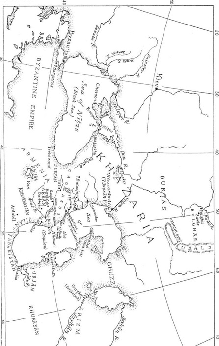

212 Baladhuri, 204; Zeki Validi tarafından Qoy-su olarak tanımlanır.
213 Belencer’in, Artamonov’da (Etudes, 93) olduğu gibi, Andreyeva yakınındaki Endere kalıntıları ile muhtemelen özdeşleştirilmesi gerekir. Artamonov’un daha sonraki Belencer = Semender denklemi doğru değildir. Çünkü Semender Arap kaynaklarında hep Bab’dan (Derbend) daha ileride gösterilmektedir ki, Hazarya’yla ilgili iki çok detaylı seyahatnamede (Cerrah ibn-’Abdullah’ın 104/722 yılındaki ve Mervan ibn-Muhammed’in 119/737 yılındaki seferi için aşağıya bakınız) Belencer ve Semender farklı şehirler olarak belirtilmektedir. Mesûdî, hem Muruc ez-Zeheb’de (VII. Blm.’de verilen tercümesine bakınız) Semender’i eski Hazar başkenti ve hem de Tanbih’de “dar-ı memleke” [saltanat şehri] ifadesiyle gösterdiği Be-lencer’i Hazarya başkenti olarak kaydeder, ama onları birbiriyle öz-deşleştirmez. Marquart başlangıçta (Streifz., 16, 492 ile karşılaştırınız), Belencer’in Varaçan’la aynı olduğunu düşünmüştür. Yukarıdaki gibi Bulkhk n. 20 ile karşılaştırınız. Yine Belencer = Varaçan olarak düşünen Artamonov, Derbendnâme de değişik isim olan Balkh’ı göstermektedir. Zeki Validi, Ibn-Fadlan, 298-299nn’de ilgili materyal bulunmaktadır.
214 Tabari, ı, 2667.
Taberi, Belencer’e yapılan bu ilk saldırının (22/642) kayıpsız atlatıldığını ve Arap süvarilerin 200 fersah ötedeki el-Beyda’ya kadar ulaştıklarını kaydetmektedir.215 Bu kayıt şüpheli olabilir. Çünkü erken dönemlerde Araplar İdil nehri üzerindeki Hazar başkenti İtil’e (Hazar İdili) el-Beyda diyorlardı. Hazarların bu bölgede 642 yılında yerleşik oldukları kesin, ama başkentlerinin burası olma ihtimali oldukça zayıftır.216 Her halükârda Müslümanların bu ilk seferde böylesine uzağa ilerlemeleri abartılı bir anlatının ürünüdür. Çünkü daha sonra sergilenen kuvvetli mukavemete nazaran Hazar savunmasının bu noktada beklenmedik derecede zayıf olduğu şüphesiz. Arap ordusu, düşmanın, tahkim edilmiş noktalara sığındıklarını ve savaşmaktan kaçındıklarını farketmişti. Arap tarihçiye göre Hazarlar, düşmanlarının ölümü tamamen göze aldıkları ve doğaüstü bir biçimde olmasa da ruhani olarak destek bulduklarını anlamışlardı. Bu, Müslüman zaferlerinin karşı ırkı, daha önce görülmemiş ve ani bir felaket karşısında şaşkına dönmüş, aciz kişiler olarak gösteren anlatısından farklıdır. Bahsedilen gelişmelerde istilacıların İdil’e kadar ilerlemiş oldukları kabul edilmektedir. Kaynaklar, bahsedilen mesafe konusunda hemfikir görünmektedir.217
215 Aynı yerde, 2668.
216 Mesûdî’ye göre (Murüj, ıı, 7, aşağıda tercümesi bulunmaktadır), Selman ibni Rabia zamanında Hazar başkenti Semender’den İdil (Volga) üzerindeki Atil’e taşınmıştır.
217 Bal’ami, 503 ile krş. (Zotenberg’in tercümesinde, ııı, 495, “vingt pa-rasanges” hiçbir güvenilir elyazmasında geçmez.) Hafiz-i Abru (Dorn, 581), “Turkistan” a 200 fersah girildiğini söyler.
Marquart, el-Beyda’ya ulaşılmış olduğunu kabul etmemekte ve Taberi’nin Belencer’e düzenlenen seferin tarihini yanlış verdiğini iddia etmektedir. Marquart’a göre bu olay 32/652 yılında gerçekleşmiştir.218 Taberi H. 32 yılı öncesi Müslümanların fetih hareketlerinin önlenemez biçimde sürdüğünü defalarca tekrarlamış olmasına rağmen, Balazuri’de 22/642 yılında Belencer’e düzenlenen bir Müslüman saldırısı hakkında herhangi bir malumat yok. Mar-quart, Belencer’e düzenlenen Arap saldırısıyla ilgili vermiş olduğu tarihe bir gerekçe göstermiyor. Halbuki İbni Haldun, Abdurrah-man’ın Hazarya ve Belencer üzerine sürekli saldırılar düzenlediği konusunda kesin bir yargıya varmamaktadır.219 Taberi ayrıca gayet sarih bir şekilde H.22 yılında ilk hedef Belencer olmak üzere Ab-durrahman’ın Hazarya’ya düzenlediği saldırıların müteakip yıllarda birçok kez tekrarlanacak olan hücumların ilk aşaması olduğunu kaydetmektedir.220 Bu ifade karşısında Balazuri’nin sessizliği ve Marquart’ın obiter dictum’u fazla dikkate alınamaz.
Arap kaynaklarıyla ayrı düştüğümüz nokta, Abdurrahman’ın öldürüldüğü büyük Belencer savaşına kadar Arapların Hazarlar karşısında kayıp vermemiş oldukları iddiasıdır. Tabi ki bunun inandırıcı bir tarafı yok. Bal’ami, düzenlenen ilk seferde olması gerektiği gibi Hazarların Araplara kayıplar verdirdiğinden bahsetmektedir.221 Sonraki saldırılar ve Müslümanların kayıpları önemsiz olabilir; ancak, bu noktada Arap geleneğinin açık bir biçimde vatansever izler taşıdığı ortaya çıkmaktadır.
221 Dorn, 505.
Bir süre sonra Osman’ın üvey kardeşi Velid bin Ukbe H.24222 yılında Kûfe valiliğine atanmıştır. Velid tıpkı babası Ukbe gibi Müslümanlıkta hoş olmayan bir üne sahipti. Kur’an’da “Ey inananlar! Eğer bir fâsık size bir haber getirirse..223” âyetinin onu kastettiği söylenir. Velid’in gece safahatından sonra sabah namazı kıldırması ona kötü bir ün kazandırmıştır. Halbuki Osman onu Kûfelileri frenleyebilecek güce sahip olduğu umuduyla atamıştı. Taberi, atanmasından hemen sonra Velid’in Azerbaycan ve Ermenistan üzerine bir sefer düzenlediğini aktarmaktadır. Bab civarında Selman ibni Rabia’yı yanına çağırmış ve onu öncü birlik olarak sınır istikametine yollamıştır. Müslümanların sayılarıyla ilgili olarak Taberi, Kûfe’de 40.000 asker bulunduğunu ve bunların dönüşümlü olarak 10.000’er kişi halinde dört yılda bir sefere katıldıklarını aktarır. Her bir yıl için hazır olan 10.000 askerin bir kısmının başka bölgelerde kullanıldığı düşünülürse, Azerbaycan’da yaklaşık 6000 adam bulunmaktadır.224 Velid, Kûfe’den ayrıldığında şehirde bulunan ihtiyat birlikleri de ona katılmıştır. Velid’in bir komutanı emrinde 4000 askerle Azerbaycan’a ve Sel-man ibni Rabia’yı da 12000 askerle Ermenistan’a gönderdiği söylenmektedir. Selman’ın vazifesi bölgede bulunan asi halkı vergiye bağlamaktı. Burada Hazarlara karşı düzenlenmiş herhangi bir seferden söz edilmiyor. Ermeniler üzerine düzenlenen sefer başarılıdır. Selman’ın emrindeki kuvvetler Velid’le birleşerek Musul tarafına çekilmiştir. Sefere dâhil olan asker sayısı çok büyük değildir. Bab ve ötesine düzenlenen önceki seferle Velid ibni Ukbe’nin düzenlemiş olduğu sefer arasında sayısal açıdan karşılaştırma yapamıyoruz; ancak, her iki seferde de Arap ordularının sayısı bir diğerinden farklı değildir.
Velid geri döndüğünde halifeden bir mektup alır. Mektupta Bizanslı batı istikametinde Müslümanları sıkıştırdıkları, bu yüzden Kûfe’den 9000 askerin alelacele o tarafa kaydırılması gerektiği belirtilmektedir. Velid bir konuşma yaparak adamlarına durumu izah eder ve Rum sınırına gidecek gönüllülere çağrıda bulunur. Böylece kısa sürede Selman ibni Rabia’nın emrinde 8000 kadar asker harekete hazır duruma gelir. Selman, emrindeki orduyla Suriye’de bulunan komutan Habib bin Mesleme’yle buluşarak Rum sınırına doğru ilerler.225
225 Aynı yerde, ı, 2807, ıı, 977 ile krş.
Velid’in 25/644 yılında düzenlediği bu sefer, Abdurrahman’ın Bab’da vermiş olduğu emrin kesintiye uğramasına yol açmamıştır. Çünkü meteakip yıllarda Velid Kûfe’den aldığı yardımlar sayesinde Hazarlara defalarca saldırılar düzenlenmiştir.226 Bu dönemde Velid ibni Ukbe’nin onun eski güzel günlerini anlatan bir torunundan bahsedilmektedir.227 Büyük olasılıkla Selman ibni Rabia bu dönemde büyük kardeşiyle ilişkilendirilmektedir. Umumi tarihçilerden İbni Abdülber, Selman’ın emri altında Belencer’e saldıran Şakik ibni Seleme adında birinden bahsetmektedir. Askerlere hayvanlarının sırtında herhangi bir ganimet götürmeme-leri söylenmiş ve yalnızca ellerinde ve sırtlarında taşıyabilecekleri kadar ganimet almalarına izin verilmiştir.228 Benzer şekilde Ker-bela’da Hüseyin’in yanında bulunan Züheyr ibn’ül-Kayn ve Be-lencer’de zafer kazanan Selman’dan aktarılan sözler bu duruma işaret etmektedir. Selman askerlerine, “Kazandığınız zaferden ve elde ettiğiniz ganimetten memnun musunuz?” diye sorar. Onlar cevap olarak “Tabi ki memnunuz” derler. Selman ise “eğer Mu-hammed’in soyundan olan kimselerin döneminde hayattaysanız, onlarla birlikte savaşıyor olmanız size kazandığınız ganimetten daha fazla mutluluk versin” der.229 Selman’a Hazarların Arap saldırılarına karşı gösterdikleri tepkide de rastlıyoruz.230 Ancak bunlar şüphesiz oldukça ufak çaplıdır. 22/642 ve 32/652 yılları arasında Müslümanlar, Azerbaycan ve Ermenistan’da işleri yoluna koyacak kadar fetih hareketleri düzenlemişlerse de, Hazarya’da elde edilmiş büyük bir zaferle ilgili herhangi bir bilgi yoktur.
226 Aynı yerde, ı, 2891.
Taberi, daha önce Rey’de bulunan Huzeyfe b. el-Yemân’ın Azerbaycan’a gönderilmiş olduğunu yazmaktadır.231 Çünkü Bab’da bulunan Abdurrahman zor durumdadır ve ona destek gerekmektedir. Hazarlarla karşı karşıya bulunan Müslümanlar oldukça güç durumdaydılar. Ancak diğer yandan sınırda bulunan Araplar arasında bir takım anlaşmazlıklar çıkmakta ve bu durum onları daha ag-resif bir hale sokmaktaydı. Bab civarında mücadeleler devam ederken Huzeyfe b. el-Yemân, Müslümanlar arasındaki anlaşmazlıkların giderilmesi için Kur’an âyetlerinin birleştirilip düzenli bir hale getirilmesi gerektiği kararına varmış232 ve daha sonra bu konuda girişimde bulunulması için halifeyi ikna etmiştir. Kûfeliler ve Suriyelilerin rekabet içinde oldukları için kutsal metinlerin doğru okunmasıyla ilgili yapılan tartışmalar oldukça önemliydi ve bu arada Kûfe’de Osman’a karşı bir muhalefet oluşmaya başlamaktaydı. Hu-zeyfe’nin raporunu gönderdiği H. 30’a kadar Bab’da henüz bir gevşemenin olmadığı görülmektedir.233 Ancak bahsi geçen bu raporda bölgede gerginliğin arttığı aktarılmakta ve şüphesiz Hazarlar da bu durumdan faydalanmaktaydılar.
231 Aynı yerde, ı, 2856.
Yezdigird’in Pers şahı unvanıyla “Hazar hükümdarı”na yazdığı bir mektuptan bahsedilmekteyse de, bu mektupla ilgili detay mevcut değildir.234 Sürgünde ve güçlük içinde geçen yıllarda Sâ-sânîlerin son şahı, H. 31 yılında ölümünden önce bölgedeki çeşitli güçlerden yardım talep etmiş, ama sonuç alamamıştır. Tabe-ri, İbn’ül Esir ve İbni Haldun Hazar hükümdarından da yardım talep edildiğini kaydediyorlar. Endülüslü şair İbni Abdun konu hakkında bilgi sahibidir ve Yezdigird ile Hazarlardan Aftasîlerin yıkılışıyla ilgili ünlü Kaside’sinde bahsetmektedir (485/1092).235
Arapların Hazarları en çok terlettikleri saldırı 32/652’de gerçekleşmiştir. İlk adım Abdurrahman ibni Rabia tarafından atılmış; Osman’ın risk alınmaması talimatını görmezden gelen Ab-durrahman, seçme birlikleri Hazarya içlerine sürmüştür. İlk ve öncelikli hedef Belencer’di. Çarpışmalar esnasında Müslümanlara kılıç işlemediği şeklindeki efsaneden daha önce bahsetmiştik. H. 32 yılında Hazarlar düşmanlarına karşı bir atakta bulunmak istemiş ve bir baskın düzenleyerek bir miktar kayıp verdirmişlerdir.236 Geniş çaplı bir çarpışma riski olmasına rağmen, Müslümanlar yenilgiye uğratılmışlardır. Bu baskın Belencer’in Müslü-manlarca kuşatıldığı esnada meydana gelen bir olay olarak aktarılmaktadır. Şehrin çok iyi direndiği anlaşılıyor. Şehir oldukça güçlü şekilde tahkim edilmişti ve hatta pek çok Müslümanın can verdiği bir kuleden söz edilmektedir. Her iki tarafın da mancınık kullandığı; Arapların hem mancınık, hem de arrâde tabir edilen küçük mancınıklara sahip oldukları bilinmektedir. Halbuki Hazarlarda sadece arrâde vardır.237 Procopius’un Hazarlarla akrabalığı bulunan Sabirlerin kendilerince kale kapılarını kırmada kullanılan bir çeşit tokmak icat ettiklerini ve bunu Bizanslılara da öğrettiklerini yazması ilginçtir.238
Taberi’nin vermiş olduğu bilgilerin önemli bir kısmı, İbni Me-sud’un maiyetindeki bir kısım Kûfeli’nin akıbetleri ile ilgilidir.239 İbni Mesud H. 30 yılında Kur’an’ın yeniden tanzimine şiddetle muhalefet eden Kûfeli bir dini liderdir. Kûfelilerin ortadan kaldırılışı hususu muğlaktır; ancak, muhtemelen itaatsizliklerinin cezasını çekmişlerdir. “Kûfe isyanı” sözü hem Halife Osman’ın hutbesinde hem de başka yerlerde geçmektedir.240 Ordusunun Hazar-ya’da bulunuyor olması Halife için dezavantaj oluşturmaktaydı.
Hazarlar, şehir civarında geçen şiddetli çarpışmalardan sonra bir süvari grubunun da iştirakiyle genel bir saldırıya geçmişlerdir241 ve detayları hakkında bilgi sahibi olmadığımız bu saldırı başarısını iyi zamanlamaya borçludur. Bir diğer kaynağa göre Müslümanların toparlanmaya çalıştığı esnada, “Abdurrahman’ın askerleri! Cesur olun! Buluşma yeriniz cennettir!” diye bir nidâ yükselir.242 Ancak Abdulrahman’ın ölümü Müslümanlar bozulup kaçmaları için yeterli olur. Onun ölümü üzerine kardeşi orduyu toparlamak ister ve muharebe hengâmesi arasında “Selman ibni Rabia’nın askerleri! Cesur olun!” diye bağırır. Selman buna “Bizi görmek seni üzdü mü?” şeklinde cevap verir. Diğer kaynaklar ise bozgunun Kûfeli kurralardan El-Karsa’nın öldürülmesiyle başladığını kaydetmektedirler.243 Tam dört bin Müslüman askeri kılıçtan geçirilmişti ve yine de savaş meydanında kalanlar zaman zaman Allahuekber nidâları atıyorlardı.244 Askerlerin bir kısmı Selman ibni Rabia ile Bab’a kaçmıştı. Diğerlerinin ise Gilan ve daha ötesine doğru kaçtıkları anlatılmaktadır.245 Bunların arasında Pey-gamber’in tanınmış sahabelerinden Ebû Hureyre ve Selman el-Fa-risi’nin de bulunduğundan bahsedilmektedir. Abdulrahman’ın cesedi savaş meydanında kalmış; Hazarlar onu alıp uygun bir gemiye yerleştirmiş ve muhafaza etmişlerdir. Bunu yapmaktan maksatları, yenilgiye uğratılmış bir düşmanı, savaş esnasında veya kuraklık vukû bulduğunda yağmur duası etmek için kullanmaktı.246
241 Baladhuri, 204. Bu kuramsal olarak mümkün olmasına rağmen, İbn’ül Esir’e göre (yıl yok 32) Batı Türk kuvvetlerinin meşgul olduğunu düşünmek için hiçbir neden yok. Taberi olayı anlatırken bazen Hazarlardan Türkler olarak bahsetmektedir (örn., ı, 2890) ve bunu yanlış anlayan İbn’ül Esir de “Türkler ve Hazarlar” diye yazmaktadır.
242 Tabari, ı, 2668-2669.
243 Aynı yerde, ı, 2892.
244 Baladhuri, aynı yerde.
245 Paralel tanımlarda bahsedilen Curcan, Tabari, ı, 2669 ve 2890. Üçüncü bir tanım (Tabari, ı, 2891) bozulmuştur.
246 Abdurrahman (Balazuri’ye göre Selman) ibni Rabia’nın Belen-cer’deki mezarı ile Çinastan’daki (esasen Fergana, H. A. R. Gibb, Arap Conquests, s. 56 ile karşılaştırınız) daha ünlü Kuteybe b. Mus-lim’in mezarı arasında bir ilişki kuran Bahile’li şairin dizelerinden bahseden Balazuri’nin (aynı yerde) referans gösterdiği Taberi, ı, 2669, 2890, her iki kahramanı aynı kabileden göstermektedir. her iki kahramanın dost kavim üyesi. (Balazuri’ye göre, Salman ibn-Rabi’a, Belencer’de öldürülen ibir Müslüman generaliydi. Balazuri ‘Abdurrahman ibn-Rabia hakkında hiçbir şey bilmiyor). Ibn el-Faqîh, 287 ile de karşılaştırınız.
Belencer bozgunu, her ne kadar Arap orduları kısa süre sonra tekrar el-Bab civarında görülürlerse de, Arap-Hazar ilişkilerinin ilk bölümünün sona erdiğine işaret etmektedir.247 Halife Osman’ın ölümünden sonra ortaya çıkan problemler, askerlerin ilgisini sınır ve fetihlerden uzaklaştırmıştır. Arapların kendi iç işleriyle meşgul oldukları süre boyunca Hazarlar rahat kalabilmiştir. Gerçi Hazarlar kazanılan bu avantajı elbette kullanmaktaydılar, ama bu arada başkentlerini de daha az tehlikeli bir bölge olan İdil kıyılarına taşımışlardı.248
IV.
İKİNCİ ARAP-HAZAR SAVAŞI (727-737)249
249 DÖRDÜNCÜ BÖLÜM İÇİN BİBLİOGRAFİK NOT: Bu bölümün son kısımlarında Taberi’nin Bal’ami’ye ait Farsça uyarlamasından yararlanılmıştır. Bu noktada birkaç açıklayıcı söz gerekebilir. Bal’ami’nin Taberi’den yalnızca çeviri yapmadığı oldukça açıktır. Yapılan bu eklentiler hakkında henüz sistemli bir teşhis yapılmamıştır. Taberi’nin söylediklerini kabul etmek ve eklenenleri çıkarmak için yapılan girişimler metodolojiden uzaktır. Bal’ami’nin Arap-Hazar savaşına yakın yıllarla ilgili vermiş olduğu detaylı bilgiler kullanılmalıdır, ama yine de söz konusu bilgilerle ilgili bir takım zorluklar vardır. Olayların sıralaması ve isimler konusunda yeterli dikkat gösterilmemiştir. Rakamlar ise genellikle abartılı-dır.(değerlendirme için Dorn’un metinlerinden örnekler vermekteyiz ) Örneğin Said ibni Amr’ın kahramanlıkları gibi bazı konular kurgudan ibaret. Gerçi bu tür sorunlar daha çok aktarımdan kaynaklanmaktadır ama Bal’ami’nin aktardıkları çoğu zaman başka bir yerde temel bulmaktadır. Bal’ami ya da diğerlerinin verdiği bilginin eğer onayı yoksa fakat bu bilgi mantıklıysa bunu doğru kabul etmek durumundayız. Bu noktada neyin mantıklı olacağı hususuna öznel değerler karışmaktadır. Olayları dizgeleyebilmek için verilen bilgiye inanılabildiği ölçüde aşırı şüphecilikten kaçınmaya çalıştık. Dikkat çeken bir diğer husus, Mesleme, Mervan ibni Muhammed ve Emevilerle ilgili abartılı efsaneleştirme girişimlerinin ve hatta tarih yazımının daha çok halef hanedanların sempatisini toplamak için yapıldığıdır.
Mevcut kaynaklara istinaden, Kafkas sınırında oluşan barış ortamının yaklaşık 30 yıl sürdüğünü söyleyebiliriz. Araplar arasındaki iç politik çatışmalar onların dış dünyaya dönük enerjilerini oldukça azaltmıştı. Diğer yandan batıya doğru yayılan ve Bulgarları hâkimiyetleri altına alan Hazarlar ise, bu süre içerisinde zaten kendi dertleriyle meşguldüler. İlerlemeleri muhtemelen 60/679 dolaylarında tamamlanmıştır. Ancak Hazarlar bundan bir ya da iki yıl sonra Kafkaslar’da savunma pozisyonuna geçeceklerdir.
62/681 öncesinde ilk olarak Arran (Albanya)’da “Varaçan Hunları”nın kumandanı Alp tarafından yönetilen bir saldırı ger-çekleştirilmiştir.250 Alp, muhtemelen Hazar kökenliydi. Çünkü diğer adı olan “İlutver”(Yaltavar, Elteber) onun Hazarlara bağlı yarı bağımsız Varaçan yöneticisi olabileceğini gösteriyor.251 “Hun” hükümdarı tarafından Ermeni piskoposu Sahak’a gönderilen bir mektuptan ve piskoposun verdiği cevaptan bahsedilmektedir.252 “Hun” hükümdarının elçilerinin isimleri Zirdkin-Khursan ve Kat-Hazar’dır. Minorsky, elçilerin isimlerinin ikinci kısımlarının onların uluslarına işaret ettiği görüşünde.253 682 yılında bir Alban piskopos, Alp ve askerlerine Hristiyanlık hakkında vaaz vermiş; bundan sonra inananlarca Tengri Han254 olarak tanımlanan Aspan-diat tanrısı ve mabetler yok edilmiş; kutsal ağaçlar kesilmiş; yerli şamanlar yargılanmış ve bazıları ölüme mahkum edilmiştir. Bu durum, her ne kadar Hazarlardan değillerse de, onlarla akrabalığı bulunan bir halkın din değiştirmesi konusunda Hazarların Mûsevîliği benimsemeleri öncesinde oldukça önemli bir örnek teşkil etmektedir. Burada, Hazarların tarihsel süreç içinde Hristi-yanlıkla iletişime geçmiş olduklarına dair ilk izlere rastlıyoruz. Bu kaynak misyon çalışmasının sonucundan bahsetmiyor. Ancak, genel olarak telkinlere pek itibar edilmediği ve dinin kalıcı olmadığı söylenebilir.255 Zaman zaman kendisi de oldukça önemli miktarda katkıda bulunmuştur. Kimi zaman İbn’ül Esir, Balazuri ve Yakubî gibi bazı yazarlar Bal’ami’nin eklediklerine atıfta bulunuyorlar. Ancak Bal’ami ile İbni A’sam el-Kûfi arasında oldukça yakın bir benzerlik söz konusu.
250 Marquart, Streifzüge, 114, 302, Moses of Kalankatuk, ed. Shahnazarean, ıı, 36’a atfen.
Alp’in seferini, 65/685 dolaylarında Hazarların Kafkasların güneyinde başlatacakları büyük istila hareketinin dışında tutmak gerekir.256 Abdülmelik’in (685-705) ilk yıllarında bölgedeki Arap hakimiyeti gevşemeye başladı.257 Bu ve bazı diğer sebeplerden dolayı Hazarlar Gürcistan, Albanya ve son zamanlarda güçlenen dini bağlarına rağmen Ermenistan’a karşı saldırıya geçtiler. Gerçi yerli halk ilk başlarda direnmek istedi, ama bunu başarabilecek kadar güçlü değillerdi. Gürcistan ve Ermenistan prensi olan Gri-gor Mamikonyan savaş sırasında istilacılarca öldürülmüştü. Hazarların bu sefer neticesinde büyük bir zafer kazandıkları söylenebilir. Ancak bu girişim, Kafkasların güneyinde hâkimiyet kurmak adına yapılmış gibi görünmüyor. Çünkü hâlâ gündemde olan Arap tehdidi Hazarları bu noktada geri adım atmak zorunda bırakıyordu. Dolayısıyla Hazarlar bölgeyi yağmalayıp topladıkları esirlerle kuzeye geri çekildiler.
256 Aynı yerde, 443, Stephan Asolik (Asoghik)’e atfen. çev. Dulaurier.
257 Aynı yerde, 514, Levond (Ghevond)’a atfen, ed. Shahnazarean, 34, 35.
Taberi’ye göre 89/707 yılında iktidarda olan Halife I. Velid’in üvey kardeşi Mesleme ibni Abdülmelik Azerbaycan’da birçok kaleyi ve şehri fethetmiş ve Bab’a ulaşmak için “Türkler”le savaşmıştır.258 Eğer aktarılanlar doğru ise, Hazarlar sözü edilen bölgede geçici bir hakimiyet kurmuş gibi görünmektedir. Bab’ın H. 90 yılında Muhammed ibni Mervan tarafından fethiyle ilgili bir bilgi bulunmaktadır.259 Fakat H. 91 yılında halefi Mesleme’nin Azerbaycan’da bulunduğu ve Bab’a ulaştığı da söylenmektedir.260 Mesleme’nin 95/713’te Bab’ı işgal ettiğini söyleyen bir diğer metin, bahsettiğimiz ilk önermenin doğru olacağına işaret etmektedir.261 Her halükârda bu kale-şehrin bir dönem Hazarların kontrolü altında olduğu anlaşılmaktadır.
258 Taberi, ıı, 1200.
Hazarlar, Müslümanlara karşı muhtemelen ilk saldırılarını Ömer ibni Abdülaziz’in halifeliği (717-720) esnasında 717 yılında gerçekleştirmişlerdir.262 Azerbaycan istila edilmiş ve bir kısım Müslüman da öldürülmüştür. Bunun üzerine halife, Rabia’nın oğulları gibi Bahile soyundan olan Hatim ibni el-Numan’ı göndermiştir.263 Bu komutan, istilacılara oldukça ağır kayıplar verdirmiş ve 50 Hazar esir ile halifeye geri dönmüştür.
Bunlar kayıtlara geçen ilk Hazar esirlerdir. Daha sonraları Arap Halifeliği’nde bulunan kimi Hazarlardan bireysel olarak bahsedilmektedir. Bunlardan en tanınmış olanı İshak ibni Kun-dac el-Hazari’dir.264 Şair Buhturi’nin çağdaşıdır ve Buhturi ondan birçok kez övgüyle bahsetmiştir. Buhturi, İbni Kundac’ın el-Bey-da ve Belencer’den başka Irak bölgesinde de ün kazandığını söyler.265 Başka bir yerde İshak ibni Kundac’ın atalarından bahseder ve onun atalarının Zi-Ruayn öncesi hükümdarlarının generalleri olduklarını söyler.266 Zi-Ruayn bir Himyeri hükümdarı olduğu için, bu atıf Hazarları daha eski bir döneme kadar taşır. Buhturi hatalı veya abartıyor olabilir; ancak, burada durum daha önceki dönemlere atıfta bulunan anakronizmlerden oldukça farklıdır. Bu noktada onun, İbni Kundac’ı ataları gibi Hazarya’nın beyleri arasında gösterme niyeti olabilir. Bir başka şiirinde Buhturi, bir kahramanlık hikâyesi içerisinde İbni Kundac’ı methederken onu “taç giyen el-Beyda meliki” olarak nitelemiştir. Yine aynı kaynaktan onun babasının iyi bir Müslüman olan Eyüp olduğunu öğreniyoruz.267 Bu metinlerden halifenin çağdaş tebaası arasında Hazar-ya’yla ilgili bir takım ortak kanaatin mevcut olduğunu görüyoruz. Sonraki bölümlerde Müslümanlar arasında bulunan diğer Hazarlardan bahsedeceğiz.
264 Mısırlı Humavereyh ile Mu’temid (Halife 870-892) arasındaki sa-vaşlardaki seçkin bir general.
Olayların seyrine tekrar göz atalım. 103/721-722 yıllarında Hazarların Alanlara saldırdıklarını görüyoruz.268 Bu sıralarda sınırlar zaten hareketli durumdadır. Sübeyt en-Nehrâni’nin ertesi yıl Ermenistan’da Merc el-Hicare269 bölgesinde Hazarlarla270 karşılaşması ve büyük bir muharebenin meydana gelmesi ikinci Arap-Hazar savaşının başlangıcıdır. Otuz bin kadar271 oldukları söylenen Hazarlar, büyük bir zafer kazanmış ve düşman kampını ele geçirmiş; yenilen Arap ordusu da Suriye’ye doğru firar etmiştir. Halife Yezid ibni Abdülmelik (720-724), Sübeyt’i sert bir biçimde azarlamış; Sübeyt ise cevap olarak, “Yâ emîr’el-mü’minin, ben kesinlikle korkaklık etmedim ve düşmanla çarpışmaktan çekinmedim; dişe diş, mızrağım kırılana kadar, kılıcımı parçalanana kadar sapladım, ama ulu ve yüce Allahım ne isterse o oluyor” der.272 Ta-beri’nin bu yenilgi ile ilgili bir şey söylememesi dikkat çekicidir.
268 Taberi, ıı, 1437; Ya’qubi, ıı, 378. Kmosko (aynı yerde), bunun bir ya da iki yıl önce Constantinople’daki Arapların kontrolüne karşı bir Hazar tepkisi olduğunu düşünmektedir.
Artık İslam topraklarını tehdit eden tehlike endişe verici bir boyuttaydı. Hazarlar geri çekilen İslam ordusundan boşalan toprakları işgal etmek için hazırlıklara giriştiler ve tüm güçlerini bu amaca teksif ettiler. Cerrah ibni Abdullah el-Hakemi, düşmana kendi sınırları dahilinde saldırma talimatıyla acil bir biçimde Ermenistan valisi olarak atandı (H. 104).273 Cerrah’ın güçlü bir ordu ile ilerlemekte olduğunu öğrenen Hazarlar, bir Arap garnizonunun bulunduğu Bab’a geri çekildiler. Bu sırada Cerrah Ber-daa’ya ulaşarak, ordunun dinlenmesi ve arazi ölçüm çalışmaları için birkaç gün mola verdi. Böylece “Cerrahi” ölçüm terimi sonraki dönemlerde de kullanılmaya başladı ve hatta bu terim Bala-zuri’nin eserlerinde de geçmektedir.274
Cerrah, Kür nehri boyunca, Bab’a birkaç mil uzaktaki Rubas isimli küçük bir dereye kadar ilerleyerek burada kamp kurdu. Arkasından mahalli şeflere, topladıkları teçhizatla orduya katılma talimatları gönderdi. Ancak Cerrah, bu şeflerden birinin Müslümanların yaklaşmakta olduğunu Hazarlara bildirdiğini öğrenmişti. Bunun üzerine yardımcısına, birkaç gün Rubas’da kalınacağını orduya ilan etmesini emretti. Aynı şekilde Hazarlara da haber verilmişti. Hazarların “lanetli Kağan’ın oğlu”275 yani Hazar Beg’ine bağlı esas kuvvetleri dağın kuzeyinde bulunmaktaydı. Mahalli şefler herhangi bir karşılaşmadan çekiniyor ve hasmane tavırlardan uzak duruyorlardı. Gece olduğunda Cerrah önceki emrini iptal etti ve Bab’a doğru yürüyüşe geçti. Gecenin karanlığında o ve askerleri herhangi bir direniş olmaksızın şehre ulaştılar. Tahta kapıdan geçerek Narin kalesine girdiler ve Bab’ül Ci-had’ın276 kuzeyinde kamp kurdular. O sabah iki koldan saldırıya geçildi ve bu birliklere düşman içerisine ilerleyip 24 saat içinde 20 mil kadar uzaklıkta aynı noktada birleşmeleri emredildi. Gün boyunca ana kuvvetler hedefe doğru ilerledi. Ertesi sabah şafak söktüğünde önceden ilerlemiş olan birliklerle bahsedilen noktada buluşma sağlandı. Zafer kazanılmıştı ve ganimet olarak birçok koyun, sığır ve esir ele geçirildi. Esirlerden bazıları Hazarlara tâbi bulunan Khaydan’lardandı277 (Kaytak).
275 Darband Namah, 464 n.
276 Farsça Darband Namah, Dorn, 464 n.; Bal’ami, 511, Türkçe Dar-band Namah, ed. Kasem Beg, 544 ile krş.
277 Belki de Khaydhan ismin bir Farsça şekli, Kaytak ise bir Ermenice şeklidir (Zeki Validi, Ibn-Fadlıân, 191). Yer, Khayzan olarak görünmektedir (Baladhuri, 204, 206; De Goeje on Yaqut, Buldan, ıv, 251). Diğer şekiller kesinlikle yanlıştır: Cıdan (Yaqut, bahsedilen yerde, Mas’udi, Muruuj, ıı, 7); Hıda, Habda, Canda, Candau (MSS. of Bal’ami, Dorn, 511); Khanda ya da Cabda (Zotenberg, ıv, 562).
Ertesi gün “Kağan’ın oğlu Barcik”in278 emrindeki 40 bin kişilik Hazar ordusu Müslümanların daha fazla ilerlemelerini engellemek amacıyla Hamzin’den279 harekete geçti. Cerrah’a atfedilen bir konuşma, onun düşmanına saygı duymakta olduğunu gösterir. “Askerlerim, ulu ve yüce Allah’dan başka sığınabilecek ne bir sığınağınız ne de yardım dileyebilecek bir yeriniz var. İçinizde ölenler cennete gidecek, zafere şahit olanlar ise hem ganimet hem de şan elde edecektir”.280 Gerçekleşen şiddetli bir çarpışmadan sonra Hazarlar yenilerek geri çekildiler. Hazarların büyük çoğunluğu katledilmiş ve Cerrah’ın söz verdiği gibi büyük ganimet toplanmıştı. Daha sonra ilerlemeye devam edilerek Hamzin ve Targ-hu281 başarılı bir şekilde işgal edildi. Cerrah, bu şehirlerdeki ahaliyi başka bölgelere yerleştirdi. Bunlardan bazılarının Güney Kafkasya’da Kabala’ya göçtüklerini okumak oldukça ilginçtir; çünkü Balazuri kendi döneminde burasının Hazar işgali altında olduğunu yazmaktadır.282
278 Bal’ami’nin metni, Barjık, Bar-hbl, Barhıl, Bârhlk’i önermektedir. Dorn, Bârjlk’in başka bir olasılık olması ile birlikte (465), Barjıl ya da Barjenk’i (466, n. 2) tercih etmektedir. Zotenberg, bir şüphe ile “Barkhebek” olarak çevirmektedir (ıv, 271). Dorn (463n) tarafından alıntılanan Derbendnâme’nin Türkçe versiyonunda Paşenk şeklinde geçmektedir.
279 Bal’ami, İbn’ül Esir ve Derbendnâme’de Hasan şeklinde geçmektedir ki, bu doğru değildir. Başka bir yerde, Mesleme’den bahseden (Dorn, 534) Bal’ami’de şu ibare var: “wa-bigudhasht wa-ba-h-snîn [h-snain] shud wa-an du hisar bud”. Örn, gecikmeden iki kaleden oluşan H-snîın’e gelmiştir. Bu, Arapça olmayan bir ismi açıklama teşebbüsü olarak görülmektedir. Balazuri (206)’de Hamzîın şeklinde. Zeki Velidi (Ibn-Fadl(în, 298 n.), H-snîn’i vermekte ve Qaya Kent (Kand) ile özdeşleştirmektedir.
280 Bal’ami, 512-513.
281 İbn’ül Esir’i (104), tarihsiz, yanlış okuyan Kmosko’nun belirttiği gibi Yarghu değil. Targhu, farklı olarak aynı konuda adı geçen Se-mender’le özdeş değildir (Bal’ami, 513-514). Zeki Velidi (aynı yerde), Targhu’yu Mahaçkale ile özdeşleştirmektedir, Minorsky, Hudud, 452 ile krş.
282 Ed. De Goeje, 194.
Cerrah, müteakiben defalarca tekrarlanan Arap saldırılarının asıl hedefi olan ve daha önce H. 32’de kuşatılan Belencer’e ulaşmıştı. Bu tarihte Arapların fethi gerçekleştirememeleri şehrin sıkı bir biçimde tahkim edilmiş olmasına bağlanabilir. Ancak bu olayın üzerinden 70 yıl geçmiştir ve diğer yandan savunmanın daha da zayıfladığı görülmektedir. Cerrah’ın karşılaştığı en ciddi problem yüksek kale duvarlarına birbirlerine bağlanarak gerilmiş olan yük arabalarıdır. Saldırı başladığında, hücum eden taraf kendisini bu tür güçlüklerin içinde bulmuştu. Mücadele güçlükle devam ederken aralarından biri kılıcını havaya kaldırdı ve “Ey Müslümanlar, hangileriniz kendisini Allah’a adayacak?” diye bağırdı. Arkadaşlarından bir kısmı ona her şekilde katılacaklarını bildirdi ve ölüm için ant içtiler. Niyetlerindeki kararlılığı göstermek için kılıçlarının kınlarını parçaladılar. Sonra yokuş yukarı adeta “güneşi karartan” bir ok yağmuru altında saldırıya devam ettiler. Aralarından bazıları yük arabalarını birbirine bağlayan ipleri kesmeyi başararak onları yokuş aşağı sürüklemeye başladılar. Kısa zaman içinde hücum yolu temizlenmişti. İki taraf da “gırtlak gırtlağa” acımasız bir şekilde savaştıysa da müdafiler zayıfladı ve Müslümanlar şehre sahip oldu.
Belencer’daki bu zafer üzerine İslam ordusunda her bir atlıya 300 dinar kadar ganimet düşmesi Hazarların zenginlik ve refah düzeyini göstermesi bakımından anlamlıdır.283 Eğer ganimeti paylaşanların sayısı abartılmıyorsa 30 bin284 kadardır ki, toplanan ganimetin hayli yüksek meblağda olduğunu göstermektedir. Ayrıca buna, şer’an beyt ül-mal’e (devlet hazinesi) aktarılmak üzere beşte bir oranında ayrılan kısmı da eklememiz gerekir.
283 Ibn-al-Athîr, tarihsiz 104.
284 Ibn’ül Esir’in rakamı. Bal’ami savaştan önce 25,000 ya da sadece 20,000 kişi olarak kaydetmektedir.
Belencer’deki Hazar valisi285 birkaç adamıyla birlikte Semen-der’e kaçtı, eşi ve oğlu ise ele geçirilerek köle olarak satılığa çıkarıldı. Cerrah 100 bin dirhem verip onları satın aldı ve Hazar valiye bir himaye belgesi göndererek kaybettiği eşini, çocuğunu, kalesini ve irili ufaklı bütün varlığını Müslüman egemenliğini kabul etmesi şartıyla geri verebileceğini iletti. Gerçi Hazar valisi bu teklifi kabul etmiştir; ama her ne kadar Belencer bir İslam şehri olduysa da, bilâhare orada ne gibi gelişmeler olduğu sorusu bu anlaşmayı muğlak kılmaktadır.
285 Bal’ami, 514; mihtar Belencer; Ibn-al-Athîr: sâhıib Belencer.
Esasen bu noktadan sonra olayların seyri hakkında bilgi sahibi değiliz. Belencer’in düşüşünden sonra Cerrah’ın bir kısım Hazarı aileleriyle birlikte Belencer nehrinde boğdurttuğu söyleniyor.286 Ayrıca birçok esir ile etrafta bulunan kaleler de ele geçirilmiş ve buraların sakinleri başka bölgelere göç ettirilmiştir. Çoğunluğunun kuzeye göçtükleri kolayca anlaşılabilir. Bu olaydan 200 yıl kadar sonra seyyah İbni Fadlan İdil Bulgarları arasındaki birkaç bin “Baranjar”ın yanına gelmiştir. Baranjar/Belencer isimlerinin aynı olduğu kuşkusuz. İbn Fadlan’ın gördüğü bu kimseler daha önce Hazar şehrinden göç eden kişiler olarak düşünülebilir.287 İbni Fadlan döneminde Belencer bir İslam şehrine dönüştürülmüş ise de, o burada Talut (Saul) isimli bir gayr-ı müslimle karşılaşmıştır. Bu durum Hazarlar arasında erken Mûsevîleşmeye işaret etmektedir.*
286 Taberi, ıı, 1453. III. Blm., n. 39 ile krş.
287 Zeki Velidi’nin ardından, aynı yerde, 191-192; Ibn-Fadlan, §70 ile karşılaştırınız.
*Yazar Arap seyyahın “gayr-ı müslim” ifadesiyle Mûsevîleri kastettiği hükmüne acaba nasıl varmıştır? Çünkü İslam nazarında Müslüman olmayan herkes gayr-ı müslimdir. İbni Fadlan’ın rastlamış olduğu kişi pekala Hristiyan da olabilir. (Ed.)
Cerrah, Belencer’den oldukça fazla muhafızın bulunduğu Wa-bandar288 (Wanandar) şehri ve kalesine doğru ilerler.289 Ancak bu muhafızlar savunma yapacak cesarete sahip değillerdi. Bu yüzden yenilgiyi kabul edip vergi vermeyi tercih ettiler. Arkasından Se-mender’e ilerlemeye karar veren Cerrah, şehre yaklaştığında Be-lencer’ın eski Hazar valisinden daha ileriye gitmenin tehlikeli olabileceği konusunda bir mektup alır. Çünkü Müslümanların hemen ötesinde büyük bir düşman gücü bulunmakta ve ayrıca iletişim hatları dağlardaki huzursuz şeflerce tehdit edilmekteydi. Cerrah bunun üzerine geri çekilme emri verir ve Arap ordusu dönüş güzergahında Kafkasları geçerek, mevsim ilerlediği için Şe-ki’deki kışlalara döner.290
288 Ibn-al-Athîr, bahsedilen yerde. III. Blm., W-n-nd-r vb. ve oradaki notlar ile karşılaştırınız.
289 Ibn-al-Athîr, bahsedilen yerde, 40,000 aileden bahseder (!).
290 Aksi takdirde, Shakka, örn. Ibn-al-Faqîıh, 288. Bu, Kmosko’nun aynı yerde Nizipli Elias’tan bahsettiği “die Stadt Şaba”dır. Latince tercümede (Corp. Script. Christ. Orient.’teki E.W. Brooks) “urbem Shabbam” vardır; ancak doğru değildir.
Cerrah’ın fetihlere ertesi yıl devam etme niyetinde olduğu görülüyor. Cerrah, halifeye bir mektup yazarak kazanılan zaferlerden bahsetmiş; ama Hazarlara tam anlamıyla boyun eğdirileme
diğini belirterek destek kuvvet talep etmiştir. Fakat baharda Yezid’in ölüm haberi (105/724) gelmiş; yerine geçen Hişam, Cerrah’ın görevini onaylamakla birlikte sadece yardım göndereceğini belirtmekle yetinmiştir.
Cerrah, sefer mevsiminin başlamasıyla birlikte tekrar Hazar-ya’ya girerek, Daryal Geçidi üzerinden Alan topraklarına saldırıp yağmalamış,291 Belencer’in daha ilerisinde bulunan bazı kale ve şehirlere saldırılar düzenlemiştir. Düzenlenen bu sefer hakkında detaylı bilgimiz olmadığı için Hazarların nasıl bir karşılık verdikleri konusunda bir şey diyemiyoruz. Bununla birlikte Cerrah’ın 106/725 yılında Alanlara saldırıp vergiye bağladığı belirtilirken,292 Hazarlardan söz edilmemektedir. Cerrah bir sonraki yıl halife tarafından merkeze alındı; Ermenistan ve Azerbaycan valisi olarak da Cerrah’ın kardeşi Mesleme ibni Abdülmelik atandı.
291 Taberi, ıı, 1462; Ibn-al-Athar, tarihsiz 105.
292 Taberi, ıı, 1472; Ibn-al-Athaîr, tarihsiz 106.
Mesleme’nin atanması o sıralar Hazar sınırına verilen öneme işaret etmektedir. Esir bir kadının oğlu olan ve bundan dolayı tahta geçme hakkı bulunmayan Mesleme, Emevi gücünün en önemli destekçisi ve doğu bölgesinin en önemli aktörü konumundaydı. Çünkü Mesleme Bizans İmparatorluğu’na yapılan sefer sırasında Hristiyan başkentini bir yıldan daha fazla kuşatma altında tutan (98/716-99/717) orduya komuta etmiş; Yezid ibni Muhalleb’in isyanını bastırmıştı. Mesleme’nin yiğitliği ve kahramanlığı bir efsane haline almıştı.293 Kişiliği ve kahramanlıkları sadece çağdaşlarını294 değil, sonraki nesilleri de etkilemişti.295 İşte şimdi böyle bir kişi, kâfir Hazarlar üzerine İslamın zaferini inşa etmekle görevlendirilmişti.
293 Mustatraf, transl. Rat, ı, 682, for Mesleme and a lady of Cairo (Mesleme ve Kahireli bir hanımefendi için); Ibn-Qutaybah, Uyun al-Akhbar, ed. Brockelmann, 211 ile karşılaştırınız.
Daha önce görevlendirilen meşhur Tay kabilesinden Haris ib-ni Amr, Hazar sınırında bazı fetihlerde bulunmuş ve kimi köyleri ele geçirmişti (H. 107).296 Ancak bu kazanımların önemli olduğu söylenemezdi. Çünkü Hazarlar H. 108 yılında “Kağan’ın oğ-lu”nun yönetiminde Azerbaycan’da görüldüler. Onları Haris ibni Amr karşıladı ve burada iki ordu arasında bir savaş vukû buldu. Savaş Müslümanların zaferiyle sonuçlandı ve Hazarlar Aras nehrinin karşı sahiline atıldılar. Burada vukû bulan ikinci çatışma da Müslümanların zaferiyle sonuçlandı. Hazarların kayıpları bir hayli fazlaydı.297
Bir sonraki sefer mevsiminde (109/727) Mesleme bizzat sahnedeydi. Azerbaycan’dan geçerek daha önce kaybedilen Daryal Geçidi’ni tekrar işgal edip Hazarya içlerine doğru ilerledi. Ka-ğan’ın direnişiyle karşılaştığı söylenirse de, esir ve ganimetlerle geri dönmüştür.298 Mesûdî’ye göre Mesleme, belirlenemeyen bir tarihte Daryal Geçidi’ni savunan kaleye bir Arap garnizonu yerleştirmiştir.299 Bu olay belki de bahsettiğimiz başarılı sefer esnasında gerçekleşmiştir. Mesûdî, bu kalenin, büyük kaya kütleleri arasında dar ve derin bir köprü biçiminde inşa edildiğini ve dünyaca meşhur olduğunu söyler.
Ertesi yıl mücadele daha sert bir hal aldı. Mesleme, Daryal civarında kağanın ordusuyla karşılaştı. Çarpışmalar bir ay kadar sürdü (110/728). Bir ara çok şiddetli bir yağmur başladığı ve kağanın bu fırsattan yararlanıp kaçtığı kaydedilmektedir.300 Müslümanlar burada bir zafer elde edildiğini iddia etseler de, bunun tersi olan görüş daha geçerli durumdadır.301 Daha sonra Mesleme, Gürcü hükümdarının ikametgahı olan ve “Zü’l-Karneyn Camii”302 olarak adlandırılan yere çekilmiştir.
300 Taberi, ıı, 1506; Ibn-al-Athîır, tarihsiz 110. Ibn-Taghrîıbardi (ı, 297), görünüşe göre yanlışlıkla buna “Mud’un Seferi” adını verir, aşağısı ile karşılaştırınız.
Mesleme’nin ününe, yeteneklerine ve kazandığı kısmî zaferlerine rağmen henüz Hazarlara tam olarak boyun eğdiremediği anlaşılıyor. Çünkü Hazarlar ertesi yıl tekrar Azerbaycan’da görülürler ve Haris ibni Amr tarafından geri püskürtülürler.303 Bu arada Hişam tarafından merkeze çağırılan Mesleme’nin yerine birkaç yıldır başkentte bulunan Cerrah ibni Abdullah tekrar vali olarak atandı.
303 Taberi, ıı, 1526; Ibn-al-Athîır, tarihsiz 111.
Cerrah’ın Hazarya’ya aynı yıl içinde bir sefer düzenlediği söylenir (H.111). İbn’ül Esir’e göre Tiflis ve Daryal Geçidi üzerinden ilerleyerek El-Beyda’ya ulaşmış ve şehri işgal etmiştir. Buradaki kahramanlık öyküsü de ciddi biçimde abartılmıştır. Çünkü bu dönemde sözü edilen başarıların elde edilebileceği türden, şiddetli ve sistemli bir mücadele gerektiren büyük bir sefer düzenlenmemiştir. 111/729 yılında Hazarya’ya kesinlikle diz çöktürüle-memiştir. İbn’ül Esir’in aktardığı üzere, oldukça küçük bir ordu İdil boylarında bulunan El-Beyda şehrine nasıl bu şekilde kolayca ulaşır ve düşman sınırları dahilinde kolayca hareket edebilir? Bu arada diğer otoritelerin bahsi geçen yıl içerisinde Hazarya’ya düzenlenen herhangi bir saldırı konusunda sessiz kaldıklarını da belirtmek gerekir. Bilâhare Halife II. Mervan olarak anılacak olan Mervan ibni Muhammed’in düzenlediği söylenen büyük sefer konusunda da aynı şekilde karışıklık söz konusudur.
112/730 senesi belki de Arapların Hazarlar karşısında en büyük yenilgiyi aldıkları yıl olmuştur. İbn’ül Esir’in 111 yılında meydana gelen olaylarla ilgili verdiği bilgilere kuşkuyla bakmamın cevabı işte bu yenilgide yatmaktadır. H. 112 yılında 300 bin304 kadar oldukları söylenen Hazar güçleri, kumandan Barcik’in komutasında Daryal Geçidi’ne305 ulaşmıştır. Cerrah’ın kışı daha önceki gibi Şeki’de geçirdiği anlaşılmaktadır. Berdaa’ya ilerleyen Cerrah oradan Erdebil’e geçip gelişmeleri takip etmeye başladı. Çünkü kuvvetlerinin önemli bir kısmı başka bölgelerdeydi. Durumu Gürcistan prensi vasıtasıyla öğrenen Hazarlar,306 Varaçan’a kadar ilerleyip şehri kuşatma altına aldılar. Cerrah, Varaçan yakınlarında düşmanla karşılaştıysa da şehri kurtaramadı. Daha sonra onun Erdebil’deki ana Hazar kuvvetleriyle karşılaştığını görüyoruz. Bir yerlinin yakınlarda bulunan Sabalan dağının arkalarına alınıp savunma pozisyonuna geçilmesi yönündeki tavsiyesine rağmen Cerrah, Marj Erdebil [Erdebil Ovası] olarak bilinen düzlükte savaşmaya karar vermiştir. Aynı mevkide Hazarlar da Müslümanların karşısına mevzilenmiş ve iki taraf savaş pozisyonuna geçmiştir.
304 Bal’ami, 517.
Her zaman olduğu gibi, burada vukû bulan çarpışmayla ilgili güvenilir bilgiler de oldukça azdır. Cerrah mevcut güçlerini ikiye ayırmıştı. Onunla kalan Suriyeliler ve mahalli güçler yeterli sayıdaydı; daha önce benzeri görülmemiş şiddette gelişen çarpışmalar arasında savaş meydanında iki gün boyunca cenk edecek kadar yürekliydiler.307 Cerrah, savaşı düzlükte kabul etmekle hata yapmıştı. Hazarlar sayıca oldukça üstün durumdaydılar ve ikinci günün akşamında bu durum kendini daha belirgin bir biçimde hissettirmeye başladı. Artık Müslümanların durumu ümitsizdi. Ordunun moralini en üst seviyede tutan kıdemli askerlerin ve kurraların çoğu ölmüştü. Ortalık karardığında hayatta kalanların birçoğu bu fırsattan yararlanarak Azerbaycan veya başka yerlerde bulunan evlerine kaçmışlardı. Şafak söktüğünde Cerrah’ın çevresinde sadece birkaç yaralı ve umutsuz adam kalmıştı. Hazarların bir saldırı daha düzenlemeleri üzerine Araplar kaçmaya başladılar. Cerrah’ın yoldaşlarından birisi “Müslümanlar, cehenneme değil cennete! Allah’ın yolunu takip edin, şeytanınkini değil!” diye bağırdı. Böylece bir araya gelme ve toparlanma gücüne erişen Müslümanlar ölünceye savaştılar. Bu sırada bozulan birlikleri kumanda etmeye çalışan Cerrah öldürülmüş; başı kesilmiş, kadınları ile çocukları Hazarların eline geçmişti. Hazarlar mutlak bir zafer kazanmışlardı. Çok miktarda ganimet ele geçirilmesine rağmen, Arap ordusunun neredeyse tamamı kılıçtan geçirildiği ve hayatta kalanlar da can çekiştikleri için, esir alınamamıştı. Birkaç yüz kişi zaten kaçmıştı. Bu olay üzerine hemen Erdebil’e saldıran Hazarlar, kısa bir direnişin ardından şehri ele geçirmiş; savaşçıları öldülmüş, kadın ve çocukları esir almışlardır.308
307 Ibn-al-Athîır, bahsedilen yerde.
308 Hazar zaferi Bizanslılarca da biliniyordu. “Kağanın oğlundan” O ‘uios Khagano’dan da bahseden Theophanes, ed. Bonn, 720 (M.S. 728) için 620. Cerrah’ın Belencer’de öldürüldüğünü Taberi (ıı, 1531) ve İbn’ül Esir (bahsedilen yerde) de kaydetmektedir. Bunun nedeni, Hicri 104’te başarılı Belencer kuşatması ile orada daha önce alınan yenilgi (Hicret yılı 32) arasındaki bir karışıklık gibi görünüyor.
Bu felaket Müslümanları derinden etkiledi. Oldukça ünlü Cerrah’ın ve askerlerinin kaybı derin bir iz bıraktı. Hazarların acımasızlığı tepkileri daha ateşli bir hale getiriyordu.309 Cerrah’ın yenilgisi daha sonraki yıllarda Orta Asya’da yankı bulacak ve konuşulacaktır.310 Halife, verilen ağır kayıplardan dolayı üzüntülüydü. Ancak bu arada Hazarlar ilerlemeye devam ettiler ve Azerbaycan üzerinden Diyarbakır ve Musul’a ulaştılar.311 Hazarların halifeden önce davranıp kitle halinde harekete geçmeleri endişe verici bir durumdu.312
309 Bal’ami, 519.
Cerrah’ın kardeşi Haccac ibni Abdullah kuzey komutanı olarak düşünülmüştü.313 Daha sonra Hişam, Mesleme’yi daha uygun buldu ve Haccac’dan vazgeçildi. Fakat vezirlerin tavsiyesi üzerine Said ibni Amr el-Hareşi,314 Suriyede bulunan Menbic’den çağırıldı. Said daha önce Cürcan’da komutanlık yapmıştı.315 Hişam, Mesleme hazır olana kadar Hazar dalgasını durdurma görevini Said’e verdi. İbn’ül Esir’e göre Hişam, Said Dimaşk’a geldiğinde ona “duyduğuma göre Cerrah Hazarlardan kaçmış” der. Said ise “Hiç de değil, Cerrah, kaçmayacak kadar Allah sevgisine sahiptir. Nitekim öldürülmüştür” diye cevaplar. Halife, “Peki senin tavsiyen nedir?” diye sorar. Said cevap olarak “Kışladan 40 atlıyı benimle, takip eden günlerde de yine 40’arlı gruplar halinde gönder. Sonra birlik komutanlarına bana katılmaları için haber ver” diye cevaplar. Bunun üzerine Hişam, Said’in tavsiyesine uyar. Bir diğer kaynağa göre Hişam, bizzat Said’e sancağı vermiş ve 30 bin seçme asker, yeterli techizat ve sefer masrafı olarak 100 bin dirhem ile kuzeye yollamıştır.316
313 Ibn-al-Athîır, bahsedilen yerde.
Said, El-Cezire’ye ulaştığında Cerrah’ın ordusundan sağ kalanlarla karşılaştı. Van Gölü civarındaki Ermeni şehri Hilat [Ah-lat]a vardığında Hazarların egemenlik bölgesine ulaşmış oldu. Müslümanlar bir hamleyle şehri ele geçirdiler. Arkasından Berdaa yolu üzerindeki diğer kaleler de birer birer ele geçirildi. Said, Ber-daa’da bir konuşma yaparak ortak tehlike karşısında birlik olunması gerektiğini vurguladı. Ayrıca bu konuşmada zenginlerden, yoksulların ihtiyaçlarının giderilmesi hususunda yardımda bulunmaları için çağrıda bulundu. Son olarak herkesin zafer için dua etmesini istedi ve Baylakan’a doğru yola çıktı.
Said’in bulunduğu esnada bölge sakinlerinden birisi “kağan’ın oğlu”nun, tarkanlarından317 birisini yakın civara mevzilendirdiği-ni söyledi. Bahsi geçen tarkan bu adamın kızlarını kapatmıştı ve o sırada hem sarhoştu, hem de âciz bir durumdaydı. Bunun üzerine Said bahsi geçen köye adamlarından birini gönderdi. Müfreze buraya ulaştığında tarkan gerçekten sarhoş ve sızmış durumdaydı. Çıkan çatışmada Hazar askerleri öldürüldü veya dağıtıltı, bahsi geçen kızlar da alınıp babalarına teslim edildiler.
317 Bal’ami, 522: tarkhâni az ân khod. Unvan, diğer Türk halkları arasında olduğu gibi Hazarlar arasında da kullanılmaktaydı ve belki de onların Batı Türkleri’yle olan ilişkisini göstermektedir. Esas anlamının “demircilerin soyundan gelenler” olduğu söylenmektedir; Zeki Validi, Ibn-Fadlan, 276 ile krş.
Bu arada Varaçan’daki Arap garnizonu zorlu bir kuşatma altında olmasına rağmen tutunabilmişti. Bu kuşatmayı kaldırmaya karar veren Said, Hazarca konuşan bir Persli ile Varaçan’a yardımın gelmek üzere olduğu haberini gönderdi. Buradaki kuşatmayı kaldıran Hazarlar Bacarvan’ı kuşatmak için yola çıktılar, ama Said’in yolda olduğu haberini alınca tekrar Erdebil’e geçtiler. Bacarvan’da beyaz atlı birisi318 Said’e, dört fersah ilerde beş bin Müslüman esirin yanında yaklaşık 10 bin kişilik bir Hazar ordusunun bulunduğunu haber verdi. Bunun üzerine Said, adamlarından İbrahim ibni Aşim el-Ukayli’yi araştırma yapmak üzere bölgeye göndermiştir. Hazarca319 bilmekte olan Ukayli, kılık değiştirerek kolayca Hazar kampına girdi. Bu arada Said de dört bin askerle saldırı planı yapmaktaydı. El-Ukayli, Hazarların gerçekten o bölgede bulundukları ve ayrıca orada Cerrah’ın hareminden bir tarkanın tecavüzüne uğramış bir kadının da bulunduğu haberini getirdi. El-Ukayli, bu kadının kendini koruması için Allah’a niyaz edişini görünce ona hemen yardımda bulunmamak için sinirlerine güçlükle hakim olabildi. Said ve askerleri bu anlatılandan oldukça etkilenerek şafak sökmeden Hazar kampına ulaşmışlardı. Hemen saldırıya geçen Müslümanlar, karşı tarafın toparlanmasına fırsat vermeden kampı kuşattılar. Hücum eden askerlerin tekbir sesleri Hazarlar arasındaki Müslüman esirlerin tekbirleriyle karıştı ve böylece saldırı daha coşkun bir hal aldı. Said’in askerleri uyanmaya çalışan düşman askerlerine olanca güçleriyle saldırmışlardı. Anlatılana göre güneş yükseldiğinde 10 bin Hazar askerinin büyük bölümü katledilmişti. Hayatta kalanlar “kağan’ın oğlu”nun yanına kaçarak felaketi haber verdiler.
318 Bal’ami, doğaüstü bir ziyaretçiyi planlıyor gibi görünür. İbn’ül Esir (bahsedilen yerde), sadece beyaz at üstündeki bir kişiden bahseder. İbni Haldun (ııı, 89), hikayeyi daha mantıklı bir şekilde açıklamakta ve “(Sa’îıd’in) casuslarından biri” olarak vermektedir.
319 Muhtemelen Hazar asıllı bir azatlı. Çünkü kendisinden başka bir yerde (Taberi, ıı, 1594-1595) el-Hazarî (Hazarlı) nisbet ekiyle söz edilmektedir. (orada D.H. Müller tarafından gereksizce değiştirilmiştir).
Said’in askerlerinin buna benzer birçok başarılı muharebesi görülmektedir. Ancak bu gelişmeler üzerine Hazarlar 100 bin kadar asker toplayarak Barcik yönetiminde Baylakan civarındaki bir nehrin yanında kamp kurdular.320 Said, Suriye, Irak ve El-Cezi-re’den topladığı 50 bin adamla Hazarları karşılamaya çıktı. İki ordu çarpışmaya hazırlanırken Müslümanlar, Hazar saflarının ortasında “kağanın oğlu”nun emirler verdiği arabasının tepesine Cerrah’ın başının yerleştirilmiş olduğunu gördüler. Bu manzara karşısında Said’in gözleri yaşarmıştı. Said, “İnna lillahi ve innâ iley-hi râciûn! Cerrah gibi bir Müslüman kardeşimizin başı dinsizlerin elinde bulundukça bizim yaşamamız onursuzluktur” dedi. Saldırıyı başlatan Said, Cerrah’ın başının bulunduğu kısma doğru hamle etti. Bu arada Barcik de arabasından inip atına binmişti. Said, bir darbe ile onu yere düşürdü.321 Barcik etrafına etten duvar ören adamlarınca korunuyordu. Bir diğer kaynağa göre Said onun başını kesip Hişam’a göndermiştir.322 Bu da diğer Müslüman zaferleri gibiydi. Hazarlar savaşta zorlanmış, sayısız kayıp vermiş ve büyük bir ganimeti arkalarında bırakmışlardı. Said muzaffer bir biçimde Bacarvan’a döndü ve toplanan ganimeti hesaplatarak beşte birini halifeye yolladı. Orduda kişi başına düşen ganimet 1700 dinar olarak aktarılmaktadır.323
320 Ibn-al-Athîr, tarihsiz 112.
321 Kasem Beg’in Türkçe “Taberi”si, bahsedilen eserde, 637’de yer alan bazı ilave ayrıntılar.
Meydana gelen olaylar konusunda orijinal bir kaynak olarak Said’in Hazarlar karşısındaki kahramanlıklarına ilişkin rivayet elbette ciddi şüpheler uyandırmaktadır. Müslümanları yönlendiren ve Hazarların sayıları hakkında bilgiler veren esrarengiz süvari karakteri, gerçek dışı masalımsı bir havaya sahip. Ayrıca bu rivayet, kağanın ya da oğlunun “Allah’ın düşmanı”324 biçiminde tasvir edilmesi gibi önceki dönemin izlerini taşımaktadır. Yine muharebelerden birinin günün hangi saatinde gerçekleştiği bildirilmektedir.325 Taberi’deki kısa ifadeleri genişleterek veya Balazuri’nin “Said, Varaçan kuşatmasını kaldırıp Hazarlar üzerine yürüdü” biçimindeki görüşlerini şişirerek veren İbn’ül Esir ve Bal’ami inandırıcı görünmemektedir. Dahası, Taberi ve Yakubî tarafından aktarılan ve detaylara girilmeyen söz konusu gelişmelerle ilgili hikayenin tamamı, olaylarla aynı dönemli ve kurmaca bir kaynak görünümü arzetmektedir.
Said, ganimeti taksim ettikten sonra Azerbaycan’daki Maymad şehrine yürüdü. Fakat henüz şehre varmadan Mesleme’nin gönderdiği öfke dolu bir mektup eline ulaştı. Mesleme mektubunda yaptığı saldırıdan dolayı çok kızdığını ve yerine Abdülmelik ibni Müslim el-Ukayli’yi atadını bildiriyordu.326 Böylece görevden azledilen Said, Mesleme’nin emriyle Kabala’da hapsedildi. Bal’ami onun, burada Mesleme ile görüştüğünü söyler. Mesleme ona Hazarlara saldırmaması konusundaki emre neden itaat etmediğini ve niçin Müslümanları tehlikeye attığını sorar. Said, Allah’ın zafer ihsan edip, dinsiz Hazarları yok edinceye kadar kendisine hiçbir emrin ulaşmadığını söyler. Mesleme, “Yalan söylüyorsun, insanların, öldürdüğün kişi sayısını duymalarını istedin” der. Said ise “Hayır, ben Allah’ın zaferini arzuladım ve onun için çalıştım. Bunun doğru olduğunu Emîr [halife] biliyordur” der. Öfkesi dinmeyen Mesleme Said’e hakarette bulunarak ona oldukça kaba davranılmasına neden olmuştur. Halifenin arması Said’in başında kırılmış ve daha sonra Said Berdaa’daki bir hapishaneye götürülmüştür. Hişam gelişmelerden haberdar olunca hemen kardeşine memnuniyetsizliğini içeren bir mektup gönderdi. Said’i görevden uzaklaştırmış olan Mesleme, yağmur ve kar yağışlarının başladığı bir dönemde el-Bab şehrinin ötesine, Hazarya içlerine doğru ilerlemeye başlamıştı.327 Ancak kaybedilen zamandan dolayı sonuç getirici şiddetli bir saldırı gerçekleştirme fırsatı elden kaçmıştı. Bu fırsat Mesleme’nin zamansız gayretiyle tekrar yaratılamazdı. Kardeşinin yapmaya kalkıştığı işleri öğrenen Hişam’ın yazdığı mektupta şu ifade bulunmaktaydı:
326 Baladhuri, 206; Ya’qübi, ıı, 381. Bal’ami ve İbn’ül Esir’de farklı.
327 Taberi, ıı, 1531-1532; Ibn-al-Ath_r, tarihsiz 112.
“Maymad’da karşılaştığında elinden kaçırdığın Hazarları şimdi yeryüzünde sonsuza dek takip mi edeceksin?”328
328 Baladhuri, 207; Hitti, Origins of the Islamic State, New York 1916, 324 ile krş.
Seferden dönen Mesleme, eski teğmeninin gönlünü kazanmak zorunda kaldı. Halifenin mektubunu Said’e göndererek pişmanlık duyduğu olaylar için özür diledi. Bunun üzerine Said hapisten çıkarıldı ve hâlâ halifenin gözde adamı olduğu ve onurlandırıldı-ğını anlaması için bir hil’at, ailesi ve kendisi için çeşitli hediyeler verildi. O gün kendisine ikta olarak verilen mülkler de daha sonra onun adıyla anılmıştır. Mevcut kaynakları incelediğimizde bir biçimde efsaneleştirilmiş olmasına rağmen, Said’in yaptığı işler gerçekten kayda değer boyuttadır. O, muhtemelen Hazarlar karşısında en başarılı Arap komutanlarından biridir.

112/730 yılında meydana gelen olaylarla ilgili olarak aktardıklarımız Hazarlar tarafından da doğrulanmaktadır. Erdebil’in işgali ile ilgili anıların uzun süre unutulmadığı görülmektedir. Yo-sef’in Cevablna göre Hazarlar arasında Mûsevîlik yayılmaya başladığında Hazar meliki bir mabet inşa etmeye karar verir ve bu mabede gelir sağlamak için Daryal Geçidi üzerinden güneye bir sefer düzenler. Bu seferin ana hedefi Erdebil’dir. Hazarlar bu seferden altın ve gümüşlerle dolu bir hazine elde ederek dönerler ve bunları Hristiyan kilisesi tarzında tasarlanan bir Mûsevî havrası için harcarlar. Yosef’in Cevabı (960) bu eserin hâlâ ayakta olduğunu aktarmaktadır.329 Ancak bu hikaye de, şekil itibariyle bir efsaneyi andırıyor. Çünkü Hazarlar ibadet için basit bir çadır kuruverirlerdi. Nitekim bu tür alışkanlıkları daha sonra Moğol Hristiyanlarda da görmekteyiz.330 Kafkasların güneyinden değerli ganimetlerle dönüldüğü anlatılmaktadır.331 Bu noktada, Cerrah’ın mağlup edildiği büyük zaferi Hazarların en azından hâlâ unutmadıklarını söyleyebiliriz.
329 VI. Blm.’e bakınız.
Mesleme en büyük seferi ertesi yıl yani 113/731’de tertiplemiştir.332 Ona göre zafer henüz uzaktadır. Bu arada Hazarların taze güçleri Kafkaslar’ın kuzeyinde toplanmıştı. Mesleme’nin daha önceleri el-Bab’da bıraktığı Haris ibni Amr, akrabalarından bin kişi kadarının da yaşamakta olduğu şehrin Hazarlarca işgaline engel olamamıştı.333 Dahası mahalli yöneticiler de Müslümanlara sürekli baş ağrısı yapıyorlardı. Bunun içindir ki Mesleme Hayzan’da çok sert önlemler almıştır. Daha sonra Mesleme, şartlar gerektirdiği için kendi istekleriyle saflarına katılan eski müttefikleriyle birlikte el-Bab’a [Derbend] geçti. Şehir kalesin-deki Hazarlar kendisini ancak birkaç gün durdurabildi. Ardından Hazarya içlerine doğru ilerleyen Mesleme, burada ordusunu mevzilendirdi. Muhtemelen riskli bir girişimdi, ama başlangıçta başarılı olmuştu. Tecrit edilmiş Hazar müfrezeleri ya yok edilmiş ya da kaçmış; sonuçta aralarında Hamzin’in de bulunduğu birçok şehir ve kale ele geçirilmişti. Bu arada şehirlerden birinin sakinleri teslim olmak yerine şehri ateşe vererek içinde ölmeyi tercih etmişlerdi. Daha sonra Belencer’e gelen Müslümanlar, “Belencer dağları”334 üzerinden Semender’e ulaşmıştılar. Bu şehrin savunması da Hamzin gibi oldukça zayıftı. Akıncılar buradan hayli ganimet elde etmişlerdi.335
332 Taberi, ıı, 1560; Ibn-al-Athır, tarihsiz 113; Ya’qubi, ıı, 381 ile karşılaştırınız. Ya’qubi başka yerde (ıı, 395), Hicri 114’ü vermektedir. Lammens (E.I. mak. Mesleme), Hazar Devleti’nden geri çekilmeyi Hicrî 115’e tarihlendirir.
333 Baladhuri, 207: alf ahl bayt min al-Khazar. “ahl bayt” ifadesi, Zeki Velidi’nin dikkati çektiği gibi (Ibn Fadlan, 190 n.) neredeyse yalın halde kesinlikle “seçkin aileler” anlamına gelmez. Bal’ami’de (533-534) “tarkhanların bin adamı” ibaresi bulunmaktadır (536, “Hazarların bin ailesi” ile krş).
Semender ulaşılan en uç noktaydı. O civarda Hazarlar ve müttefiklerinin oluşturduğu ordunun “ancak Allah’ın bileceği kadar kalabalık” olduğu haberini alan Mesleme, Cerrah’ın pozisyonuna düşmemek için geri çekilmeyi uygun buldu.336 Şimdi şaşırtıcı geri çekilme başlamıştı.337 Geri çekilmeden önce kamp çadırları sökülmemiş ve düşmanı aldatmak için ateşler yakılmıştı. Ancak askerlerin birçoğu ne savaşabilecek ne de yürüyebilecek durumdaydı. Onlar konvoyun en önüne, iyi durumda olan askerler ise en arkaya alınmıştı. Güçlükle devam edilen geri çekilme harekatı gelmiş oldukları güzergahtan gerçekleşiyordu. İbn’ül Esir’e göre Müslümanlar Derbend’e güç bela ulaşmışlardı.338
336 Yukarıya bkz.
Bir süre sonra geçitleri takip eden Hazarlar Müslümanlarla karşılaştılar.339 Mesleme, ordunun sol cenahına Süleyman ibni Hi-şam,340 sağ cenahına Mervan ibni Muhammed ve merkezine ise Abbas ibni el-Velid’i341 yerleştirmişti. Mahalli kabile reislerinin yönetimindeki birlikler Hazar saldırılarının şiddetini biraz azalta-bilmişlerdi. Araplar ve müttefikleri Emevi sancağı342 ile pozisyonlarını tüm gün koruyabilmişlerdi. Mervan hareketleriyle dikkat çekmekteydi. Sık sık gözden kayboluyordu ve hatta bir ara Mes-leme’ye ölüm haberi getirilmişti. Kumandan “Hayır Allah’ım, halifeliğe ulaşıncaya kadar değil!” demişti. Akşam olmak üzereyken firari bir Hazar askeri Mesleme’ye kağanın çadırlı arabasının343 yerini gösterdi. Mervan bu işe gönüllü olarak atıldı; ancak, görev Sabit en-Nehrâni’ye verildi.344 Bunun üzerine küçük bir kuvvetin eşlik ettiği Sabit ileri atıldı ve kağanın arabasının işlemeli çadırını kılıcıyla kesti. Kağan yaralanmıştı, ama karışıklıktan yararlanıp kaçmayı başardı. Bu arada gelişmeleri takip eden Müslümanlar son bir hamleyle galebe çalmayı başardılar.345
339 Bu konuda Theophanes’le (n. 88) aynı görüşü paylaşan Taberi ve İbn’ül Esir, Hazarlarla asıl savaşın bu sefer sırasında vukû bulduğunu kaydederler. Örneğin Taberi ve İbn’ül Esir’e göre Hazar-ya’dan geri çekilmeden önce “kağanın oğlunun” öldürülmesi.Ya-kubi’ye göre (bahsedilen yerde), savaş W-r-?_n’da yapılmıştır (Ho-utsma, Varsan). Bu, neredeyse kesinlikle Varaçan’dır. Örn., kuzey Varasan (III. Ünite, n. 17 ile karşılaştırınız). İbn’ül Asam el-Kufi’ye göre, savaş Derbend’de olmuştur (Zeki Validi, Ibn-FadlUn, 305). Bal’ami ile İbn’ül Asam el-Kufi’nin güvenilir olmadığı genel kuralına dayanarak ya da Mesleme’nin halifeyi idaresi (aşağıya bakınız) konusundaki görüşünü verirken Mervan tarafından böyle bir savaş hakkında hiçbir şey söylenmediği için tanımın hayali olduğu varsayılamaz. Olay için bağımsız kanıt var gibi görünmektedir
(n. 96).
340 Halifenin oğlu. Bahtsız bir kariyeri vardı ve trajik bir şekilde Ab-basilerin gelişi ile sona erdi.
341 I. Velid’in oğlu.
342 Bal’ami, 534.
343 Zeki Velidi (lbn-Fadlân, 120), İbn’ül Asam el-Kûfi’den kaynakta j-dadah (Zeki Velidi’ye göre muhtemelen bir Hazar sözcüğüdür) adı verilen arabasının tasvirinin alıntısını yapıyor: Zemini çeşitli halılarla örtülüydü. Çadır örtüsü ipek brokardandı ve tepesinde altın bir nar bulunuyordu. Bir Hazar prensesinin kervanındaki diğer arabalar için, VII. Blm.’e bakınız.
344 Bu şahsın Hicri 103 yılında kumandan olması muhtemel değil gibi görünüyor.
345 Bal’ami hem “kağanın oğlu” Barcik’den hem de kağandan söz etmektedir ki, bu kayıtla iki Hazar kralından söz edilmek istendiğini düşünemeyiz. İbni Kuteybe’ye göre (Ma’_rif, 185), Mesleme Türklerin (Hazarların) kağanı ile karşılaşmış, onu öldürmüş ve o yıl yani Hicri 113’te Derbend’i inşa etmiştir. Kaydettiğimiz gibi, Hicri 113 yılında Hazarlarla bir çatışma olmuş, ama hakanın oğlunun Said’le girdiği savaşta öldürülüp başı halifeye gönderildiği göz önünde bulundurulursa, muhtemelen burada bir önceki yıl Said’in kazandığı zafere atıfta bulunulmaktadır. (Nitekim Balazu-ri de (207) bu sırada Mervan’ın Mesleme’yle birlikte olduğunu ve Hazarlara karşı üstünlükler sergilediğini kaydetmektedir). Diğer taraftan, 113 yılında başka bir Hazar reisinin (Taberi ve İbn’ül Esir’e göre “kağanın oğlu”, İbni Kuteybe’ye göre bizzat kağan) bütünüyle başarısız geçen ve Mesleme’yi valilikten eden sefer sırasında öldürülmüş olmasından bahsedilmesi şüpheli bir durum. Muhtemelen o sırada Said’in üst rütbeli bir memuru olan Mesle-me bir önceki yılda olanlardan dolayı şeref kazanmıştır. Kesinlikle “Kağanın başıyla geldi” (n. 73) atasözü ya da Meydanî’nin “Kağanın başı ile birlikte gelen kişiden daha şerefli” dizesiyle anlattığı olayla ilgili olması gerekir. Freytag, bunu Orta Asya’da Hicri 119’da meydana gelen bir olayla ilişkilendirmektedir. (Arabum Proverbia, ı, 195). Çünkü o yıl Türklerin (Türgişlerin) kağanı uğranılan bir hezimetten sonra çıkan şahsî bir kavgada öldürülmüş ve kendi halkı tarafından yakılmıştı (Taberi, ıı, 1613). Kağanın tuğu ile birlikte bazı Türklerin başları Hişam’a gönderilmiştir (aynı, ıı, 1616); ancak Arapların onun naaşına sahip oldukları konusunda hiçbir kayıt bulunmamaktadır.
Hazarların inhizamından sonra artık sıra Derbend’e gelmişti. Mesleme’nin getirtmiş olduğu mancınıklara rağmen şehir saldırı ile düşmeyecek kadar güçlü görünüyordu. Bunun üzerine Mesle-me, eski bir yöntem olan şehrin sularını zehirleme taktiğine başvurdu. Susuz geçen bir gün Hazarlara durumun çaresiz olduğunu ispatlamıştı. Hazarlar ertesi gece şehri terkedip kuzeye doğru kaçtılar. Mesleme ve askerleri şehre girdi. Derbend [El-Bab] şehrinin bu tarihten itibaren baştan sonra yeniden inşa edilmiş ve düzenlenmiş olduğu görülmektedir. Dimaşk, El-Cezire, Kûfe ve Humuslu askerler için ayrı bir kışla oluşturuldu. Ordu için bir depo ile buğday ve arpa ambarları yapıldı. Şehre bir vali atandı.346 Tahkimat çalışmaları artırıldı ve giriş için demir bir kapı inşa
346 Bal’ami, 538.
edildi.347
347 Kmosko, aynı yerde (MS. B.M. Add. 14,642, ed. Brooks, 235) tarafından bahsedilen Suriye vakayinamesi, Mesleme’nin ordusun-daki taşçılardan ve diğer işçilerden bahseder.
İkinci Arap-Hazar savaşının son safhası Mervan ibni Muham-med adıyla ilişkilendirilir. 114 (732)348 yılının sonunda, Mervan ibni Muhammed 4000 kişiden oluşan bir ordu topladı ve Belencer’den geçerek Hazarya içlerine kadar ilerledi. Yağmur hiç durmaksızın yağıyordu. Savaş boyunca Mervan’ın, sefere ismini veren çamurun349 atların kuyruklarına yapışmaması için kuyrukların kesilmesi emrini verdiği söylenir. Burada daha fazla bir şey yapıldığı hakkında bir bilgi bulamıyoruz. Bu savaşta birkaç düşman öldürülmüş; esirler ve ganimet elde edilmiştir.
Bir süre sonra350 Mervan kuzeni Hişam’ın huzuruna vardı. Mervan’a neden geldiği soruldu. Mervan, Cerrah’ın yenilgisinden beri Hazarlara karşı alınan önlemleri kabataslak eleştirdi. Arada bir Mesleme hakkında da konuştu. Mervan kendisinin tam yetki verilmesi ve 120.000 kişilik bir orduyla tekrar cepheye gönderilmesi gerektiğini önerdiğinde, Halife Hişam kuzeyden gelen haberlerin etkisiyle bu teklifi olumlu karşıladı. Daha sonra yönetimi ele alan Said ibni Amr katarakt geçirmesi sebebiyle yerine birinin atanması için halifeye mektup yazmıştı.351 Bu yüzden Mer-van harekete geçti ve halifelik heyetiyle birlikte Ermenistan genel valisi olarak Kafkas cephesine doğru ayrıldı.
350 İbn-al Athir, tarihsiz, 114. Burada Mervan’ın Mesleme’yle birlikte döndüğü kaydının yanlış olduğu anlaşılıyor.
351 Bal’ami, 539.
Daha önce kaydettiğimiz gibi eğer Said iki yıldır genel vali idiyse,352 Mervan’ın 117/735 yılına kadar dönmüş olması zayıf bir ihtimaldir. Mervan, varışından kısa bir süre sonra Berdaa’ya 40, Tiflis’e 20 fersah uzaklıktaki Kasak’a yeni bir üs kurdu.353 Baştan beri, Hazarlara saldırmak onun amacıydı, ancak bunu hemen yapamadı. Zaten, Ermenistan’da bastırılması gereken isyankâr şefler vardı ve bu önemli bir uğraş gerektiriyordu. Müslümanların fethettiği ve muhtemelen üç kaleyi ellerinde tuttukları Alanya’ya bir keşif gezisi de gerekliydi ki,354 tüm bunlar Mer-van’ın bir yıldan fazla vaktini almıştı. Mervan, esas girişimini, istilayı ve mümkünse Hazar’ın istilasını gerçekleştirmek için gereken zamanı 119/737’ye355 kadar bulamayacaktı.
352 Balazuri, 207. Taberi Said’in genel vali olduğundan söz etmemektedir. (II.1563,1573)
353 Balazuri’de böyle,( aynı yerde). Balazuri Kisal, Bal’ami Kasâl, İbn’ül Asam el-Kûfi ise Kasâk şeklinde yazmaktadır ki, muhtemelen doğrusu budur. (Zeki Validi, Ibn-Fadlan, 296)
354 Tabari, II, 1573
355 İbn’ül Esir Mervan’ın sefer tarihini (bkz. tarihsiz nüsha) Hicri 114 yılı olarak vermektedir ki, oldukça erken bir tarihtir. Aynı kaydı mükerreren tarihsiz nüshanın 119’uncu sayfasında da vermektedir. Taberi, Mervan’ın Hicri 119 yılında sadece Ermenistan ve Azerbaycan valisi olduğunu kaydetmektedir (ıı, 1635); İbni Tag-rıberdi ı, 314 ile karşılaştırınız. Mervan’ın seferinin 199/737 yılında olduğu konusunda genel bir mutabakat söz konusudur (Arta-monov, 738).
Ordusunu Hazarlara karşı harekete geçirmek üzereyken birden Alanlara saldırmak üzere olduğunu ilan etti. Tam bu sırada kağanın gönderdiği bir elçi Müslümanlarla barış anlaşması yapabileceğini bildirdi. Fakat Mervan Müslümanlar kamptan huruc işlerini tamamlayıncaya kadar Hazar elçisini alıkoydu.
Bu uzlaşma düşüncesi ne olursa olsun, Mervan gibi münhezim ve tehlikeli bir düşmana, onun yurduna karşı kötü niyet besleyen bir Müslüman generalin uyguladığı strateji takdire şayandır. Plan aslında basit ve orijinaldi. Mervan, önce düşmanda bir şok etkisi yaratmak ve hemen arkasından Derbend ve Daryal geçitleri üzerinden eş zamanlı bir saldırı düzenlemeyi planlıyordu. İlk adım tamamen başarılıydı. Şimdi emrinde düzenli ordudan ve gönüllülerden oluşan büyük bir kuvvet vardı (muhtemelen 150 000 asker).356 Kendisi ana kuvvetlerle Daryal hattı boyunca ilerledi. Diğer birliklerse Ebû Yezid Useyd İbni Zafir es-Sülemi komutasında Derbend tarafından hareke geçti. Kağan ve danışmanları üzun bir süre olup bitenlerden bîhaberdiler. Ebû Yezid’e Se-mender’de buluşma talimatı verilmişti. Buluşma yeri dikkat çekicidir. Eğer Mervan gerçekten orada olmuş olsaydı, Hicri 113’de Semender’den başlayan büyük bozgunu hatırından çıkarmazdı. Aynı bozgun Mesleme ve Cerrah’ın da başına gelmiş; hiçbir Arap ordusu daha ilerisine geçememişti.357 Böyle bir direnişe rağmen Mervan’ın amacı ilk fırsatta Semender’e kadar ulaşmaktı.
Belencer kuzey ordusu tarafından baypas edilmişti. Her iki kol da düşmanın zayıf mukaveti sayesinde amacına ulaştı. Semen-der’e ulaşıldığında358 orduya büyük bir çeki-düzen verildi. Belirttiğimiz gibi ordu beyaz elbise - ki Emevilerin rengiydi- ve yeni kılıçlarla359 donatılmıştı. Bunun öylesine uzak bir üsde nasıl başarıldığı konusunda herhangi bir kayıt bulunamadı. Muhtemelen Mervan, Semender’den daha ileri gideceği hesabıyla sıradaki her askere büyük önem verdiği için büyük bir kervan hazırlamanın yararlı olacağını düşünmüştür.
358 Bal’ami, aynı yerde.
359 Zeki Velidi’nin kaydına göre İbni Asam el-Kûfi’de bu şekilde. Ibn- Fadlan, 296 ff.
Hazar elçisi son ana kadar çadırda alıkonulmuştu. Sonra Mervan elçiyi çağırttı ve onun yanında Hazarlara küfür ederek savaş ilan etti. Bundan hemen sonra, mümkün olduğu kadar çok zaman kazanmak amacayla360 elçi karmaşık bir yoldan geri gönderildi. Sonunda elçi hakana ulaştığında, Mervan çoktan Hazar topraklarının iç kısımlarına dalmıştı. Paniğe kapılan kağan, beyleri çağırtarak tavsiyelerini istedi.361 Beylerin sundukları en iyi teklif, başkentten acilen kaçış yönündeydi. Çünkü ne Müslümanlara karşı koymanın bir faydası olacaktı, ne de daha büyük kuvvetlerin toplanmasını beklemenin. Kağan bu yüzden kuzeydoğuya, dağlara (Urallar) doğru çekildi. Başkenti, belli sayıda kuvvetin korumasına bıraktı. Mervan Semender’den hareket ederek güzergahı üzerindeki el-Beyda362 civarına ulaştı. Araplar bu şehre Hazar metropolü adını verdiler, fakat kuşatmayı düşünmediler. Aksine daha ileri yönelerek İdil nehrinin sağ kanalı boyunca kuzeye ilerlediler.
360 İbn-al-Athir, tarihsiz, 114
Hazar ülkesinin sınırları üzerinde, Burtaslara ait yerleşim yerleri, İdil Bulgarlarının363 topraklarına kadar uzayan bir mesafeye yayılmıştı. Her iki millet de o sıralar, sonraları olduğu gibi, kayıtlarda Hazar İmparatorluğu’nun tebaası idi. Burtaslar doğrudan Müslümanların saldırısına maruz kaldılar ve büyük acılar yaşadılar. Rivayete göre yirmi bin aile esir edilerek güneye364 göç etmeye zorlanmıştır. Ayrıca bölge de süvarilerin atlarının ayakları altında çiğnenerek hayli zarar gördü. 365
Bu arada, daha önce belirtildiği gibi, Hazar ordusu bir Hazar Tarkan yönetiminde Mervan’ı İdil366 ırmağının karşı kıyısından takip ediyordu. Mervan’ın planladığı saldırı için vakit gelmişti. Nehir kavşağı düşmanın geçişini engellemesi ve gelmesi halinde imha etmesi talimatıyla Kevser ibn’ül Esved el-Enbari adlı bir Suriyeliye bırakılmıştı. Mervan düşmanı aralarına aldıkları için, karşıya sonra geçmeyi önerdi. Kevser (mümkün olduğunca) harekete geçmekte isteksizdi, fakat general herhangi bir gecikmeyi kabul etmiyordu. Öncü Müslüman kuvvetlerin geçmesi için İdil üzerine bir tür duba köprü367 inşa edildiği kaydedilmektedir. Küçük bir Hazar avcı grubuna rastlanarak imha edildi. İlk gece ağaçlar altında hazırlık yaparlarken368 fundalığın orta taraflarından bir dumanın yükseldiği görüldü. İslam ordusu bunun Hazar birliklerine ait olduğu kanaatine vardı. Kevser ve askerleri hızla ileri atılarak ani bir şekilde düşman kampına ulaştı ve hızları sayesinde Müslümanlar bir zafer kazandılar. Kevser esir alınan kişilerden daha önce karşılaştığı öncü grubun başındaki kişinin bizzat Hazar Tarkan olduğunu öğrendi.
366 Ibn-A’tham al-Kufi, bahsedilen yerde.
Nehrin her iki sahilinde de başka bir çatışma olmadı. Kevser tekrar generale katıldı. Hazar kağanı son düzenli birliklerin de yok edilmesi üzerine müzakere için bir elçilik heyeti gönderdi. Rivayete göre Mervan kağana tek bir şart koştu: Ya Müslüman olacak, ya da ölecekti. Elçi net bir cevap getirmek için üç gün mühlet istedi. Anlaşılan kağan fazla uzakta değildi. Sürenin bitiminde elçi kağanın İslamı kabul etmeye hazır olduğunu bildirmek için geri döndü.
Kağan kendisine İslamı öğretmesi için birinin gönderilmesini istiyordu. Mervan ona Nuh ibn’üs Saib el-Esedi ve Abdurrahman el-Havlani adında iki fakih gönderdi.369 Dinin temel esaslarına uygun olarak şarap içmek, domuz eti, murdar hayvan eti yemek ve kan içmek yasaklanmıştı. Kağan şarap ve murdar et konusunda kendisine ruhsat verilmesi talebinde bulunduysa da, yasağın kesin olduğu belirtildi. Kağan yine de isteksiz davrandı, ama sonunda ister istemez Müslümanlığı kabul etti.
369 Bal’ami, Ibn-A’tham al-Kufi.
Kanaatimizce Mervan Hazarlara da daha önce İslamı kabul eden diğer küçük Kafkas prensliklerine davrandığı gibi muamele etmek niyetindeydi; fakat Hazarya farklıydı. Bu ülkeyi kontrol altında tutabilmek için bir Arap genel vali ve daimi güçlü bir ordu gerekliydi. O sıralar Mervan bu ikisini de yapabilirdi, ama hiç de öyle yapmadı. Muhtemelen kendi ülkesindeki siyasi buhranlar sebebiyle böylesine uzak bir diyarda bu kadar fazla miktarda askeri tutmama düşüncesi bunda rol oynamıştır. Aksine Mervan, Hazarya’yı Müslüman bir hakan sayesinde kontrol altında tutmak istiyordu. Hazar hakanının başkentine dönme isteğini memnuniyetle kabul edep, baht-ı saadet diledikten sonra, muzaffer ordusu ve kalabalık bir esir grubuyla birlikte güneye doğru yola koyuldu.370 Cihat seferi böylece sona erdi.371 Zor ve gülünç duruma düşme hissinden uzaklaşmak zordur. Müslümanlar daha başarılı olmalıydılar. Elbette Mervan’ın çekilmek için yeterli sebepleri vardı. Bir cihetten onun bu davranışı tabii ve mâkuldü. Hazar-ya’da diğer Kafkas prensliklerinde yaptığını yaptı. Karşılaşılan her yeni problem karşısında yeni bir çözümü başarıyla uygulayan ilk Müslümanların yaşadıkları dönemden farklı bir dönemde yaşıyordu. Geçmişini dikkate aldığımızda, Mervan’ın politik mantığının aslında askeri zekâsıyla hiç de aynı seviyede olmadığı görülüyor ya da öyle anlaşılıyor. Artık Araplar o güne kadar ilerlemelerine engel teşkil eden ve kendileri için tehdit unsuru oluşturan şeyleri ortadan kaldırma şansını yakalamışlardı. Fakat bu şans, onu yaratan kişi tarafından geri itilmiş gibiydi ve bir daha da olmayacaktı. Hazarya’nın kaderinde bir İslam eyaleti olmak yazılmamıştı ve aksine zamanla başka ellere geçinceye kadar Arapların önünde bir engel ve tehdit olarak kalacaktı.
370 Hazarlı esirler, “el-Lakz ovasındaki Samur ve Şabiran [ırmakları] arasına” yerleşmiştirilmiştir. Burtaslar ise Kahit’e (Kahetya) gönderilmiş; burada başlarındaki Müslüman emîri öldürüp kaçmışlar, ancak Mervan tarafından yakalanarak imha edilmişlerdir. (Ba-lazuri, aynı yerde).
371 Ibn-Taghrlbardi, bahsedilen yerde.
Mervan’ın genel valilik günlerinden sonra Hazar tarihi doğrudan fazla ilgi uyandırmıyor. 119/737’den sonraki iki ya da üç yıl Serir Avarları ve diğer gruplara372 karşı saldırılarla harcandı. Bu arada Hazar kağanı bariz bir şekilde kendi haline bırakılmıştı. Hazarya’da neler olmuş olabileceğini Mervan’a itaat etmeyi reddeden ve muhtemelen 122/740’da bekindiği kalede kuşatma altına alınan Lakz prensi Üpas ibni Madar’ın hareketinden anlamak mümkün.373 Neticede Üpas Hazar kağanına kaçmayı düşünen birkaç yandaşıyla birlikte kaleyi terketti. Lakzların reisi muhtemelen o civara yeni yerleştirilen Hazar esirleriyle temas halindeydi.374 Anlaşıldığı kadarıyla bu dönemde Hazar hakanı neredeyse bağımsız bir haldeydi. Eğer M.S. 740 tarihi Hazarların Mûsevîliğe375 geçtikleri tarih olarak doğruysa, kesinlikle öyleydi. Balazu-ri’nin bir kaydından aralarındaki husumet dolayısıyla “Müslümanları Hazarlar’a karşı kullanmak amacıyla” Mervan’ın Şirvan-şah’a dokunmadığı anlaşılıyor.376
372 Bal’ami, 541ff; Baladhuri, 208ff; Ibn-al-Athlr, tarihsiz 114 ve mü-kerreren, tarihsiz 121, üçüncü bir yerde de o yönde ima vardır, tarihsiz 118.
İlk bakışta, kağanın 737’de Müslüman olduğu ve üç yıl sonra Mûsevîliğe geçtiği ifadesi, doğrusunu söylemek gerekirse, ilginçtir.377 Onların birbirleriyle378 ilişkili olduğu zaten söylenmekteydi. Hazarların Mûsevîliğe geçiş tarihini başka bir zaman tartışacağız. Bu arada, Hazarya’da öncelikli olarak dini ve politik durum bir ya da iki yıl şiddetli bir şekilde çökmüşse de, tarihte bu kadar sık karşılaşılan bir olgunun daha iyi anlaşılabilir olması dikkate değerdir. Yahudi kaynaklarından öğrendiğimize göre kağanın Mûsevîliğe geçişinden önce huzurunda düzenlenen dini bir münazaranın Mervan’ın gönderdiği fakihlerle yapıldığı sonucuna varılabilir. Klasik metinlerde Bulgar hakanına İslamı kabul ettiren üç kişiden biri olduğu kaydedilen Abdurrahman ibni Zübeyr’in kağanın huzurundaki tartışmaya katılan iki fakihten Abdurrah-man el-Havlani’yle aynı kişi olduğu sanılmaktadır.379 Ama tartışmadaki başarısızlığından sonra Hazarya’dan çekilen bu kişinin şans eseri İdil Bulgarlarına gönderildiği düşünülemez.
377 737 yılında Mûsevî olmuş olması çok zayıf bir ihtimaldir. Yukarıda 112/730 olayları ile karşılaştırınız
Bilindiği gibi Mervan Hazarya’dan dönüşünden sonra dağlı prensleri itaat altına almakla meşguldü ve dolayısıyla kağana karşı yeni bir seferi daha sonraya bırakmıştı. Fakat bunu gerçekleştirdiği konusunda herhangi bir bilgiye rastlamadık. Eyaletindeki Müslüman tebaa Haricilerle görüş birliği içinde bulunduğundan devlete karşı isyan halindeydi. Hişam’ın ölümüne kadar (125/743) genel valilik görevini sürdüren Mervan, arkasından II. Velid ve III. Yezid’in kısa iktidarları döneminde aynı görevde kaldı, ama bu sırada Hazarlara karşı herhangi bir hareket gerçekleş-tirilmedi. Bunun güç toplamakla geçirilen bir ara dönem olduğu muhakkak. Ama kağanın ve beylerinin bahtına Mervan halifelik makamı için mücadele etmek amacıyla 126/774 yılında bulunduğu eyaleti terkedecekti. Emeviler ve Abbasiler arasında devam eden taht mücadelesinin Hazarların işine yaradığını söylersek sanırım abartmış olmayız. Olayların seyrinden anladığımız kadarıyla, yapılan bu darbenin sonuçlarından birisi de, Müslümanların Kafkasyadaki yayılışını kesinlikle geciktirmiş olmasıydı.
Ancak, olaylar başka yönde gelişti. 114/732’de Hişam’ın halifeliğinde olduğu gibi, Müslüman orduları aynı yıl içinde hem kuzey Pyrenee’de hem de Kafkaslar’ın ötesinde mevzilendiler. Bunun Şam’daki halife tarafından belirlenen ve kontrol altında tutulan kararlı bir hareket olduğunu gösteren herhangi bir kanıt yok, ama Avrupa ve Hristiyanlığın İstanbul’un Türkler tarafından fethi ve Türklerin Viyana kapılarına dayandığı günlerden daha ciddi bir tehdit altında bulunduğu düşünülebilir. Neyseki o yıl düzenlenen iki sefer de başarılı olmadı. Batıda Charles Martel’in Fransızları, “Abdarame” (Abdurrahman ibni Abdullah el-Gafi-ki)’yi Tours savaşında yendi ve Müslümanları dağların380 ötesine sürdü. Kafkaslar’da Mervan’ın saldırısı başarısızlığa uğradı. Fakat gördüğümüz üzere 119/737’de Mervan tekrar Hazarya’ya saldırdı ve bu defa, eğer kaynaklarımıza güvenebilirsek, büyük bir başarı sağlandı. Eğer Hazarya, Mervan ya da yerine gelenlerden biri tarafından kalıcı bir şekilde kontrol edilmiş olsaydı, şüphesiz ki müteakip yıllarda Don ve Dinyeper’e büyük Müslüman göçü olacaktı. Batıda engellenen Araplar, Doğu Avrupa’da muzaffer olmuş olabilirler. Hazarya’nın masun bölgesi ince bir hattı. Gerçi o ayakta kalmayı başarmıştı, fakat İslamın sınırları da Kafkaslarda bu yönde kalıcı şekilde sağlamlaşmıştı.
380 Hitti, History of the Arabs, ed. 3, 501, Tours’dan sonra bile Müslümanların Fransa’nın diğer yerlerindeki operasyonlarının devam ettiğine işaret etmektedir.
V.
ARAP KAYNAKLARINA GÖRE HAZARLARIN MUSEVİLİĞE GEÇİŞLERİ
Arap kaynaklarında Hazarların Mûsevîliğe geçişleri ile ilgili kesin bir kayıt yoktur, fakat en sarih ve ikna edici kayıt, belki de yazımına 332/943’te başlanan ve 336/947’de bitirilen meşhur Mu-ruc ez-Zeheb’in (Altın Bozkırlar) “Bu şehirde (Atil, Hazar’ın İdil nehri üzerindeki başkenti) Müslümanlar, Hristiyanlar, Mûsevîler ve paganlar yaşamaktadır” şeklindeki kaydıdır. “Yahudilere gelince, melik381 ve maiyeti Yahudidir. Hakan Hazarlardandır. Hazar meliki Harun er-Reşid zamanında Mûsevîliği kabul etmiştir. İslam ülkelerinden ve Rum diyarından gelen Mûsevîler de ona katılmıştır. Çünkü içinde bulunduğumuz 332 (943-44) yılında Rum hükümdarı Armeneus (Romanos) ülkesinde bulunan Yahu dileri Hristiyanlığa geçmeye zorladığı ve bu konuda takibat yaptırdığı için, Yahudilerin bir kısmı belirttiğimiz gibi Rum topraklarından Hazar yurduna kaçtılar. Hazar melikinin Mûsevîliği kabul edişi meselesini burada anlatacak değiliz. Çünkü o konu üzerinde daha önceki kitaplarımızda durmuştuk.”382
381 Kitabın bu bölümüne kadar Hazarlar ve Arap-Hazar savaşlarından bahsedildiği, söz daha ziyade Hazar hakanı üzerinde dolaştığı için metnin orijinalindeki “the king” kelimesi hakan olarak çevrilmiştir. Ancak, Hazarya’da Mûsevîliğin kısmî yayılmasından ve iktidarın Yahudilerin hakimiyetine geçişinden itibaren bu ülkede ikili yönetim uygulanmış; Türk asıllı ‘kağan’ bir noktada “cumhurbaşkanı” sıfatıyla tepede durmuş, ancak ipler “başbakan”a tekabül eden “melik”in elinde olmuştur. Arapça kaynaklar bu ikili yönetim konusunda dikkatli kayıt düşmüşler; Türk hakandan bahsedildiği zaman “hakan”, Yahudi kraldan bahsedildiği zaman da “melik” kelimesini kullanmışlardır. Rus tarihçiler de bu farkı göz önünde bulundurmuşlardır. Dolayısıyla bu bölümden itibaren İngilizce aslında bir ayırım yapılmasa da, biz, Türkçe çeviride bu nüansa dikkat edeceğiz. (Ed.)
382 Muruj al-Dhahab, II, 8-9, Bodleian’ın düzenlemesini göz önüne bulundurdum.
Burada Mesûdî’nin kaydı bir tahmine dayanmaktadır ve bu tahmin kesinlik kazanmış değildir. Dimaşki’nin eserinde (727/1327) şöyle deniliyor: “İbn’ül Esir, Harun döneminde imparatorun [Bizans imparatorunun] Yahudileri göç etmeye nasıl zorladığını anlatır. Mûsevîler, zeki fakat disiplinsiz bir ırk buldukları Hazarların topraklarına geldiler ve onlara kendi dinlerini sundular. Yerli halk bu dini kendi dinlerinden daha iyi buldu ve kabul etti.”383 İbn’ül Esir’deki bu kaydı inandırıcı bulmayan Marqu-art, Mesûdî’nin görüşünü desteklemektedir.384 Endülüslü Bekri ise (487-1094), “Vaktiyle ateşperest olan Hazar hükümdarının Mû-sevîliğe geçişi şu şekildedir: Önce Hristiyanlığı benimsemişti; sonra itikadının yanlış olduğu kanaatine vararak, valilerinden biriyle saliki olduğu din konusunda sohbete başladı. Vali ona, “Hükümdarım, ehl-i kitap üç gruptur. Onları huzuruna çağır ve bilgi al. Hangisini doğru bulursan onun dinini kabul et” dedi. Bunun üzerine hükümdar Hristiyanlara bir adam göndererek kendisine bir papaz yollamalarını istedi. Yanında münazaralar konusunda deneyimli bir Yahudi vardı. Bu Yahudi Hristiyan papaza “Amran oğlu Mûsa ve ona indirilen Tevrat hakkında ne düşünüyorsun?” diye sordu. Papaz, Mûsa’nın bir peygamber, Tevrat’ın da sahih olduğu cevabını verdi. Bu defa Yahudi hükümdara onun (papazın) kendi itikadını tastik ettiğini belirterek “Sorun ona, kendisi neye inanıyormuş?” dedi. Kral ona bu soruya yöneltti. (Papaz): “Ben diyorum ki, Meryem oğlu İsa-Mesih kelimullah’dır ve kendisine Allah’ın adının sırları öğretilmiştir” diye cevap verdi. Yahudi, “Ben onun söylediği şeyi bilmiyorum, ama o benim itikadımı onayladı” dedi. Ne var ki Hristiyan papaz delil getirmede maharetli biri değildi. Daha sonra hükümdar Müslümanları davet etti ve Müslümanlar ona tartışmadan anlayan bilgili ve zeki bir adam gönderdiler. Fakat Mûsevî onu yolda zehirleyip öldürmesi için bir adam tuttu. Ve Mûsevî Müslüman din adamı gelmediğinden kendi dinini hükümdara kabul ettirdi.” 385Bu hikayenin muhtevası ne olursa olsun, mevcut Arap kaynaklarının Hazarların Mûse-vîliğe geçişi öncesinde yaşanan dini münazarayla ilgili klasik bir anlatım tarzıdır. Başka bir önemli Hazar kaynağının kaydının da göz önünde bulundurulması gerekir ki, o da Yahudi rivayetlerinin bir özelliğidir. Ona göre bu münazaranın yapılmasını isteyen hükümdar değil, bizzat o kişidir.386 Eğer Marquart’ın tahmin ettiği gibi, Bekri’nin naklettiği bu hikaye Mesûdî’nin bulunamayan bir eserine dayanıyorsa, o takdirde Mesûdî’nin sözünü ettiği hükümdar huzurunda yapılan bir münazarayı müteakiben gerçekleşen din değiştirme olayının 809’dan (Harun Reşid’in ölüm tarihi) daha sonra olmadığı bilgisine zaten sahibiz. Bu sonuç prensip olarak Mûsevî geleneklerine ters değil. Yahuda ha-Levi’ye göre Cos-ri (Kuzari)lerde din değiştirme, bundan bahseden eserinde (ve Yosef’in Cevabı’nın önemli bir kısmında) Mûsevîlik, Hristiyanlık ve İslamın meziyetleri konusunda 740’da yapılan bir münazaradan sonra gerçekleşmiştir. Tarihe baktığımızda, Mesûdî’nin kay-dındaki zaman farklılığı 50 yıldan az olabilir (Harun 170/768’de halife oldu); ama notlarını üstünkörü kaydeden Mesûdî’nin yazdığını göz önünde bulundurursak, olayın Harun’un döneminden birbuçuk asır sonra gösterilmesi çok ciddi bir farktır.387
383 Cosmographie, ed. Mehren, 263.
Şimdi din değiştirmenin tarihi ve gerçekleştiği koşullar için Arap kaynaklarından daha çok kanıt göstermek zorundayız. İs-tahrî’nin şu sözleriyle başlamak uygun olur388: “Hazarya’ya gelince, bu, o bölgenin adıdır ve başkenti Atil’dir.389 Atil aynı zamanda Rus ve Bulgar topraklarından doğan ırmağın adıdır. Nehir şehri iki parçaya ayırır390; bir parçası nehrin batısında olup şehrin büyük kısmını teşkil eder. Şehrin bir kısmı nehrin doğusundadır.391 Melik bu ırmağın batı yakasında yaşar. Melike kendi dillerinde Bek ya da Bak denir. Melikin yaşadığı kısmın uzunluğu yaklaşık bir fersahtır. Çevresi surla çevrilidir, ama sur alçak ve yayvan yapılmıştır. Hazarların evleri pek az istisnasıyla keçe bargâhlardır.392 Çarşıları ve hamamları var. Kasabada on binden fazla Müslüman ahalinin bulunduğu söylenir. Otuz kadar camileri var. Melikin sarayı sahilden uzaktadır ve tuğladandır.393 Melik kimsenin tuğla bina yapmasına izin vermediği için, onun sarayının dışında tuğla bina yoktur. Daha önce belirtmiş olduğumuz surun dört kapısı vardır; bunlardan biri nehre nazırdır. Bir diğeri şehrin arka tarafındaki bozkıra açılır.394 Diğer ikisi de bozkıra açılır. Melikleri Yahudi’dir. Dört bin kişilik bir mevkebi olduğu söylenir. Hazarlar Müslüman, Hristiyan395 ve Yahudidir. Aralarında putperest olanlar da vardır. Yahudiler bu gruplar içinde sayıca en az olanıdır. Halkın çoğunluğu Müslüman ve Hristiyandır. Buna rağmen melik ve mevkebi Yahudidir.
388 De Goeje, 220-226. Prof. Kahle’nin mukayeseli metinlerinden Ches-ter Beatty’ye ait olan nüshayı da kullandım.
389 De Goeje Ithil şeklinde tashih etmişşe de, Arapçadaki en eski şekli Etil, bazen de Atil’dir. İbranice metinlerde ‘-t-l (Reply in L. V., ben-Daud), ‘-til (Camridge Nüshası) ve ‘ti-l (Eldad ha-Dani) şeklinde daima (‘) ile yazılmaktadır. Muruc ez-Zeheb’in Paris edisyonunda geçen Amul kelimesi ise önemli bir gaftır.
390 Diğerlerine göre şehir üç bölümden oluşmaktadır. Bury, Mesûdî’nin melikin ikamet ettiği yer olarak gösterdiği batı kesiminin bir adayı da içine aldığı görüşündedir. (Eastern Roman Empire, 403)
391 İbni Havkal (De Goeje edisyonu, 278), batı kesiminin Atil, doğu kesiminin Hazaran adını aldığını ilave etmektedir. Başka bir nüshada ise (Kramers, 389) doğu kesimi Atil, batı kesimi Hazaran adıyla geçmekte. Kramers, adı geçen eserde De Goeje’nin kaydının yanlış okumadan kaynaklandığını belirtiyor. İbni Havkal başka bir yerde burasının küçük bir şehir olduğunu kaydetmektedir (ed. Kramers, 15).
392 Rivayete göre şehrin her iki kısmının da evleri eskiden ahşaptanmış. Marquart (Streifz., 18) ve Bury (age.,) böyle demektedirler ama neye istinaden (büyük ihtimalle Mukaddesi) bu kaydı düştüklerini bil-miyorum.Çifte şehrin evlerinin ahşap olduğu söylenmekteydi.
393 Bu kalenin, Don üzerindeki Sarkel’in inşasından sonra ve kullanılan malzeme itibariyle onun taklidi biçiminde yapılmış olması muhtemeldir. Eğer Hazarların bunu inşa edebilecek kadar yetişmiş elemanları yoksa, muhtemelen burada Romalılardan yararlanılmıştır.
394 K.’de eklenen cümle.
395 Astel (Atil), Notitia Episcopatuum (Kulakovsky, “The Gothic Eparchy”, Vasiliev, Goths in the Crimea, 97) olarak bilinen belgede VIII. Yüzyılda Constaninople Patrikliği’ne bağlı Doros’taki bir met-ropolitanın idaresinde kilise şehri olarak geçmektedir. Aynı belgede Hazarlardan Khotzeron (Khotziron) biçiminde bahsedilir. Burada ön çoğul ekidir. Poliak, Kırım’da Sudak’lı Stephen’ın biyografisinde George tarkan isimli mahalli bir Hazar beyinin Ortodoks Hristiyan olduğunu belirtir. Hazarlar kendi dillerinde ibadet ettikleri bir Hris-tiyan kilisesine sahiptiler. (Slavic Life of Constantine, Marquart, Streifz, 190)
“Putperestlerin âdetleri en dikkat çekici olanıdır. Birbirlerine hürmeten secde ederler. Bunların aralarındaki Müslüman, Hristiyan ve Yahudilerin dinlerine uymayan eski ananelerine göre hükümleri vardır.396 Melikin 12000 kişilik bir ordusu vardır.397 Bunlardan biri ölünce yerine başkası tayin edilir. Bu askerlerin sabit maaşları yoktur. Yalnızca arada bir cüzi bir maaş alırlar. Savaş çıktığında veya başlarına bir şey geldiğinde melikin etrafında toplanırlar. Melikin gelir kaynakları kervanların ve gemilerin korunmasından, yollardan, denizlerden ve nehirlerden geçen ticari emtiadan alınan öşürden ve çevredeki ahaliden toplanan yiyecek, içecek vs. gibi vergilerden ibarettir.
396 Bu ve diğer pasajlardan da anlaşıldığı üzere Hazarya’da uygulanan [Talmudî] rabbinizmi değil Türk yasalarını uygulamışlardır.
397 İbni Havkal’da (Kramers, 390) bunun yerine “Hazaran’ın bütün ordusu” şeklinde geçmektedir.
”Kralın, halkın malına sahip çıkma hakkı yoktur.398* Onun hazinesi kullanımlara göre belli miktarlarda tüm karayolları ve deniz ve ırmaktan alınan vergilere (arşâd) ve ticarete bağlıdır. Farklı yer ve bölgelerdeki halkların vergileri krala bağlanır399 ve tüm yiyecek ve içecekleri içeren ihtiyaçlarını buradan karşılar. Kralın Mûsevîlerden, Müslümanlardan, Hristiyanlardan ve kıdemli kişilerden oluşan yedi hâkimi400 (hukkam) vardır. İnsanların davalık durumu olduğunda bu yedi hâkim ilgilenir. Grupların kendisi krala yaklaşmaz, sadece bu hâkimler yaklaşır. Mahkeme günü kral ve hâkimler arasında ne olduğu hakkında hâkimlerle birlikte cevap veren ve krala ulaştıran bir sözcü vardır. Sözcü kralın emirlerini hâkimlere taşır.
398 K’da aynı.
* İstahrî’nin De Goeje edisyonunda böyle bir cümle yok. (Ed.)
“Şehrin hiç köyü yok. Fakat çiftlikleri geniş. Halk tarlaları ekmek için yazları yaklaşık yirmi fersah yol gider. Nehirdeki ve bozkırdaki ürünlerin bazılarını toplar ve ürünlerini ya at arabalarıyla ya da nehir yoluyla şehre getirirler. Ana yiyecekleri pirinç ve balıktır. Ülkelerindeki bal ve balmumu onlara Rus ve Bulgar bölgelerinden getirilir. Benzer olarak, dünyanın tüm bölgelerine götürülen kunduz derileri sadece Bulgar ve Rus bölgelerindeki bu nehirlerde bulunur ve bildiğim kadarıyla başka bir yerde de yoktur.
”Hazar’ın doğu kesimi [ülkenin başkenti]nde tacirler, Müslümanlar yaşarlar. Ticaret burada yapılır. Şehrin batı kesiminde melik, yakın çevresi,401 ordusu ve sade sakallı Hazarlar402 yaşarlar. Hazar dili Türklerin ve İranlıların dillerine benzemez. Hiçbir halkın dili de bunların diline benzemez.403
401 K’da eklenmiştir.
402 Marquart (Streifz., 41, n. 2) “eigentliche Chazaren”i “gerçek Hazarlar” şeklinde sunarak onları İstahrî’nin tarif ettiği “Beyaz Hazarlar” şeklinde tanımlamaktadır. Onlar muhtemelen Ak Hazarlar’dır (I. Blm.’deki Akatzir’lerle krş.) Zeki Velidi (Jbn Fadlan, 317 vd) bu sözcüğün Mesûdî’de geçen “Hazarların hizmetindeki Harezmliler”i gösterdiğini düşünerek, İbni Havkal’daki “el-Hazar el-halis”i “el-Hazar el-hullas” şeklinde okumaktadır; ancak, İbn Fadlan s. 270’de Marqu-art’ın kelimeye verdiği anlamı desteklediğini belirttikten sonra onun bu görüşü pek tutarlı görünmüyor. “Saf, bozulmamış” anlamındaki “el-halisa” tekil şeklinden sonra el-hullas çoğul şeklinin hemen kullanılmış olması kesinlikle saçmalıktır; ama muhtemelen Chester Be-atty’deki İstahrî (K) nüshasında geçen “el-hazar el-has” ifadesi İbni Havkal’ın birinci edisyonunda “halisa” yerine “hassa” (ki 2. edisyo-nunda bu kelime değişiktir) şeklinde geçtiği için ifadenin el-hazar el-has yani “üst tabakaya mensup Hazarlar” diye okunması daha doğru olabilir. Hullas, muhtemelen “ak, beyaz” anlamındaki halis’in çoğul şeklidir. Bkz. Qâmûs. Eğer el-Halis şekli orijinal ise Rus kroniklerinde iki defa geçen Hvalis isimli halkla karşılaştırabiliriz. Zeki Veli-di’nin kaydettiği gibi Halis/Hvalis Harezm’le (l’nin r’ye değiştirilmesiyle) ilişkili olsun veya olmasın, bu sözcüğün Hazarlar arasında kullanıldığı şüphesiz. Notitia Episcopatuum’daki “Khouales (Hvalis), As-tel (n. 14) ve Tumatarkha gibi Doros metropolitanlığına bağlıdır” ifadesiyle krş. Vasilyev, Khouale’nin İdil nehri ağzı yakınlarında Hazar-ya’ya bağlı bir şehir olduğunu düşünen Kulakovsky’yi (age.) takip etmektedir; ancak, Vasilyev’in Arap kaynaklarına dayanarak Rusların Hazar Denizi’nde seferler düzenlediği görüşü aşağıda tartışılacaktır (Blm. IX). Ben, Arap kaynaklarında, ne de başka bir yerde Rusların Hazarya’da akınlar düzenledikleri Khouale, Hvalis vb. gibi şehir adlarına rastlamadım. İdil üzerinde Hvalinsk isminde bir yerden bahsedilmektedir. Keza, Howorth’ın kaydettiği gibi (3.cü Müsteşrikler Kongresi, II 139) Menander Protector’da (300, 383) Khliâtai veya Kholiatai ve muhtemelen en doğru şekliyle Khoalîtai (Marquart’a göre Kholiatai=Halac (Holac)lardır) geçtiğine göre Halisler de mevcuttu. Dahası, bu isim yani muhtemelen bu halk, Hazarya’nın düşüşüne dek varlığını sürdürmüştür. Khalisioi’ların XII. Yüzyılda Manuel Comnenus’a karşı savaşmakta olduklarından bahsedilmektedir. (John Cinnamus, Bonn edisyonu, 107; Vasiliev, Goths, 99)). Vasil-yev’in Yunancadan yaptığı çeviriye göre, diğer “Hunlar” yani Macarlar Hristiyanlığı benimserken, onlar bu döneme kadar “saf haliyle değilse de Mûsa şeriatını uygulamışlardır.” Aynı yazarın eserinin bir başka yerinde (Bonn edisyonu, 247) Khalisioi’ların Macarların tebaası oldukları belirtilmektedir. Bunların, bir dönem Hazar yönetiminden Macarların hakimiyetine geçen (bu konuyla ilgili olarak VII. Blm’e bkz.) halk olduğu biraz şüpheli görünüyor. Anlaşılan onlar Hazarların kullandıklarını sandığımız veya istidlal ettiğimiz Mûsa şeriatını kısmen uyguluyorlardı. Yosef’in Cevabı’nda geçen haraçgüzar halklar arasında Hvalis/Halis/Khalis’lerle bir çırpıda özdeşleştirilebi-lecek herhangi bir halk yok, ama mektupta zikredilen Arisu’lar onlar olabilir. Eğer öyleyse, Hazarlar zamanında bu halk İdil sahilinde yaşamaktaydı. Arisu’ların As (Alan)larla özdeşleştirilmesi nasıl uzak bir ihtimalse, Harezmli Arsiya (Mesûdî’nin aşağıda çevirisi verilen metnindeki Arisiya) ile özdeşleştirilmesi de fazla cüretkârlıktır. Halis Tarkan ibaresine dayanarak Hazarlarla Harezmlilerin karanlık ilişkilerini aydınlatmaya çalışmak hayalden başka bir şey değildir.
403 K, jumlah Kafiyah\ eklemektedir ki, muhtemelen “tamamıyla”(?) anlamındadır.
* Yazarın bariz biçimde Kimak şeklinde yazılan kelimeyi hangi Arapça kurala dayanarak Kaymak olarak okuduğunu anlalayabilmiş değilim. Kelimenin doğrusu Kimak’dır ve kesinlikle Kaymak okunamaz. Benzeri bir yanlış okuyuş Yusuf Ziya Yörükan’ın hazırladığı eserde de vardır. (Ed.)
“Atil nehrine gelince, duyduğuma göre, Kırgız topraklarına yakın bir yerde doğarak Kaymak* ve Guz toprakları arasından geçer ve onlar arasında sınır oluşturur. Sonra Bulgar’ın arka tarafından batı istikametinde ilerleyerek Rus topraklarına ulaşıncaya kadar tekrar bir kavis çizer. Sonra tekrar Bulgar topraklarından geçip, Burtas ülkesini katederek Hazar Denizi’ne dökülür. Söylendiğine göre Atil, yetmiş küsur kola ayrılır. Nehrin suyu oldukça bol ve temizdir. Denize döküldükten sonra iki günlük yol boyunca içeride ilerler ve deniz suyunu bastırır. Öyle ki, tatlılık ve berraklığından dolayı kışın donar; rengi deniz suyunun renginden ayrılır.
“Hazarların, başkent404 ve Bab el-Ebvab arasında Semender denilen bir şehirleri vardır. Şehrin çok bağı var. Semender’in, Serir405 açıklarına kadar ulaşan bağları olduğu söylenir. Temel meyve üzümdür. Burada Müslüman ahali bulunur ve camileri vardır. Evleri ağaçtan yapılmıştır ve çapraz düzendedir. Çatıları yuvarlak, kubbe şeklindedir. Melikleri Hazarların hakanına406 yakınlığı bulunan bir Mûsevîdir. Onlardan Serir sınırına kadar olan mesafe iki fersahtır.407 Onlarla Serir hükümdarı arasında sulh vardır.
404 “fîma beynehâ” ibaresi kendinden önce geçen kısma açıklık getirmektedir.
405 Avar Krallığı, Minorsky, Hudud. s. 447.
406 Bu şahıs, veliaht prensten ziyade (Zeki Validi, İbn-Fadlan, 106, elte-ber) muhtemelen Marquart’ın belirttiği gibi merkezi Hazar yönetimi tarafından atanmış bir tudun yani genel validir. Belencer genel valisi ile krş. (Blm. IV, n. 36).
407 Semender’in bugünkü Terek yakınlarındaki Kızlar olduğu farzedilir-se (Zeki Validi, Völkerschaften, 47) mesafenin çok kısa olduğu görülür. Krş. Minorsky, Hudud, 452.
”Serir halkı Hristiyandır. Tahtın (Serir) İran krallarının birine ait olduğu ve altından döküldüğü söylenir. İranlıların egemenlikleri sona erdiğinde, bu taht İran krallarından biri tarafından taşınarak Serir’e getirildi. Onun Behram Çubin’in evladından408 olduğunu duymuştum. İktidar şu güne kadar onların uhdesindedir. Bu tahtın yıllar önce Hüsrevlerden* biri için yapıldığı söylenir. Serir ve Müslümanlar arasında sulh vardır ve ikisi de birbirinden409 bağımsızdır. Hazarya’da Semender dışında insanların yaşadığı başka bir yer olduğunu bilmiyorum410. Burtaslar Hazarlarla sınırdaştırlar. Hazarlar ve Burtaslar arasında başka bir halk yoktur. Onlar Atil (Volga) vadisi boyunca saçılmışlardır. Burtas, Rusya ve Hazar gibi bir bölgenin adıdır. Serir ise bir şehir veya halk adı değil, krallık adıdır.
408 Behram Çubin, Sâsânî Anuşirvan ve Hürmüz döneminde Kafkas sınırında görevliydi.
* Yazar burada da Kisra’nın (eski İran şahları için kullanılan hitap sözü ve unvan) çoğulu olan Ekasire kelimesini yanlışlıkla Husrev’in çoğulu zannetmiştir. Doğrusu “kisralardan birisi için...” şeklindedir (ed).
“Hazarlar Türklere benzemezler. Siyah saçlıdırlar ve iki grupturlar. Birisi Hintlileri andıracak kadar esmerdir ki, Kara Hazarlar denilir; diğeri ise son derece yakışıklı ve beyazdır. Hazarlardan köle olanlar, onlarla birlikte yaşayan, kendi evlatlarını ve birbirlerini köle haline getirmeyi normal karşılayan putperestlerdir. Onlardan Yahudi veya Hristiyan olanlara gelince, onlar da Müslümanlar gibi birbirlerini köle olarak kullanmayı yasaklarlar. Hazar ülkesi balık tutkalından başka ihraç edilebilecek hiçbir şey üretmez. Köleler,411 bal, balmumu, kunduz derisi ve diğer deriler Hazarya’ya dışarıdan getirilir. Hazarların ve çevre halkların giysileri mont ve kabandır.412 Ülkede hiçbir giyim eşyası üretilmez. Bunlar Hazarya’ya Curcan, Taberistan, Ermenistan, Azerbaycan ve Bizans İmparatorluğu’ndan getirilir.413”Politika ve ülke yönetimine gelince, en baştaki kişi Hazar Kağanı denilen biridir. Hazar melikinden daha yetkilidir, ama bununla birlikte onu tahta çıkaran kişi Hazar melikidir.414 Bu kağanı atamayı istediklerinde, onu getirirler ve boğulma noktasına gelinceye kadar bir ipek fularla (boğazını) sıkarlar.415 Sonra ona “Ne kadar süre hüküm sürmek istiyorsun?” diye sorarlar. O da “şu kadar yıl” der. Eğer o bu süreden önce ölürse, ne âlâ; eğer ölmezse, belirlenen sürede öldürülür.416 Kağan, sadece tanınmış bir aileden seçilidir.417 Emretme veya yasaklama hakkına sahip değildir; ama yine de kendisine saygı gösterilir ve huzuruna girildiğinde secde edilir. Melik ve onun ayarında olanlar dışında kimse ona yaklaşamaz. Melik onun huzuruna çıktığında, - ki bu sadece özel durumlarda olur,- onun önünde eğilerek yere kapanır ve kağan yaklaşmasına izin verene kadar belli bir mesafede bekler. Başlarına büyük bir felaket gelince hakan sarayından çıkarılır. Onu gören Türkler ve onlarla birlikte yaşayan putperestler geri döner; ona hürmeten onunla çarpışmazlar. Hakan ölünce gömülür. Mezarına uğrayan herkes hayvanından iner, oraya secde eder. Kabri gözünden kayboluncaya kadar hayvanına binmez. Hazarların hakanlarına o kadar itaatkâr oldukları söylenir ki, eğer eşraftan birisinin öldürülmesi gerekiyorsa ve melik de onun alenen öldürülmesini istemiyorsa, ona gidip kendisini öldürmesini söyler ve o da evine dönüp kendini öldürür. 418Hakanlık, fazla mal mülk sahibi olmayan tanınmış bir kabilededir. Reislik sırası bunlardan birine gelince onun hal ve vaktine bakmazlar, onu hakan yaparlar. İtimat ettiğim biri, bana onların çarşılarından birinde ekmek satan bir genç gördüğünü, hakanları ölünca hakanlığa ondan daha layık biri olmadığını söylediklerini haber verdi. Ancak, bu genç Müslümanmış, hakanlık ise Mûsevî olan birine verilirmiş. Taht ve altın otağ [altın kubbe] ancak hakan için kurulur.419 Şehrin dışına çıktıkları zaman hakanın otağı melikin çadırlarından daha yüksekte kurulur. Hakanın şehirde oturduğu yer de melikin oturduğu yerden (evinden) daha yüksektir.
411 El-zîbak sözcüğü, “civa” anlamındadır, ama K nüshasındaki er-rakik (köle) kelimesi tercih edilmelidir. De Goeje, aynı yerde, 223 ile krş.